<!doctype html>
<html lang="ja">
<head>
  <meta charset="utf-8">
  <meta name="viewport" content="width=device-width, initial-scale=1">
  <title>第5章: 単変量乗法誤差モデル | 高頻度金融データの計量経済学</title>
  <link rel="stylesheet" href="../style.css">
</head>
<body>
  <a class="skip-link" href="#main">本文へ移動</a>
  <div class="progress" aria-hidden="true"><div class="progress-bar" data-progress></div></div>
  <header class="topbar">
    <button class="icon-button" type="button" data-menu-toggle aria-label="ナビゲーションを開閉">☰</button>
    <div class="topbar-title">第5章: 単変量乗法誤差モデル</div>
    <button class="icon-button" type="button" data-theme-toggle aria-label="テーマを切り替え">☾</button>
  </header>
  <div class="book-shell">
    <aside class="sidebar" aria-label="テキストブック ナビゲーション"><a class="brand" href="../index.html">高頻度金融データの計量経済学<small>第1〜7章 日本語HTML版</small></a><input class="nav-search" data-nav-search type="search" placeholder="章を検索 /" aria-label="ナビゲーション検索"><p class="nav-section-title">教材</p><ul class="nav-list"><li data-nav-item><a class="nav-link" href="../index.html">ホーム</a></li><li data-nav-item><a class="nav-link" href="../contents.html">章一覧と使い方</a></li><li data-nav-item><a class="nav-link" href="../embedded_images.html">埋め込み図版</a></li><li data-nav-item><a class="nav-link" href="../qa.html">QAレポート</a></li><li data-nav-item><a class="nav-link" href="../about.html">README</a></li></ul><p class="nav-section-title">章</p><ul class="nav-list"><li data-nav-item><a class="nav-link" href="ch01_introduction.html">第1章 導入</a></li><li data-nav-item><a class="nav-link" href="ch02_microstructure_foundations.html">第2章 市場マイクロストラクチャーの基礎</a></li><li data-nav-item><a class="nav-link" href="ch03_empirical_properties_of_high_frequency_data.html">第3章 高頻度データの実証的性質</a></li><li data-nav-item><a class="nav-link" href="ch04_financial_point_processes.html">第4章 金融点過程</a></li><li data-nav-item><a class="nav-link" href="ch05_univariate_multiplicative_error_models.html" aria-current="page">第5章 単変量乗法誤差モデル</a></li><li data-nav-item><a class="nav-link" href="ch06_generalized_multiplicative_error_models.html">第6章 一般化乗法誤差モデル</a></li><li data-nav-item><a class="nav-link" href="ch07_vector_multiplicative_error_models.html">第7章 ベクトル乗法誤差モデル</a></li></ul></aside>
    <main id="main" class="main-wrap">
      <div class="content">
        <nav class="toc" aria-label="ページ内目次"><p class="toc-title">ページ内目次</p><ol><li class="level-2"><a href="#この章の位置づけ">この章の位置づけ</a></li>
<li class="level-2"><a href="#重要概念">重要概念</a></li>
<li class="level-2"><a href="#サブセクション別の日本語要約">サブセクション別の日本語要約</a></li>
<li class="level-3"><a href="#5-1-arma-models-for-log-variables">5.1 ARMA Models for Log Variables</a></li>
<li class="level-3"><a href="#5-2-a-mem-for-durations-the-acd-model">5.2 A MEM for Durations: The ACD Model</a></li>
<li class="level-3"><a href="#5-3-estimation-of-the-acd-model">5.3 Estimation of the ACD Model</a></li>
<li class="level-3"><a href="#5-3-1-qml-estimation">5.3.1 QML Estimation</a></li>
<li class="level-3"><a href="#5-3-2-ml-estimation">5.3.2 ML Estimation</a></li>
<li class="level-3"><a href="#5-4-seasonalities-and-explanatory-variables">5.4 Seasonalities and Explanatory Variables</a></li>
<li class="level-3"><a href="#5-5-the-log-acd-model">5.5 The Log-ACD Model</a></li>
<li class="level-3"><a href="#5-6-testing-the-acd-model">5.6 Testing the ACD Model</a></li>
<li class="level-2"><a href="#学習上の読み方">学習上の読み方</a></li>
<li class="level-2"><a href="#原文ページ別抽出とページ画像">原文ページ別抽出とページ画像</a></li></ol></nav>
        <nav class="pager" aria-label="前後の章"><a href="ch04_financial_point_processes.html">← 第4章 金融点過程</a><a href="ch06_generalized_multiplicative_error_models.html">第6章 一般化乗法誤差モデル →</a></nav><article class="article"><h1 id="第5章-単変量乗法誤差モデルunivariate-multiplicative-error-models">第5章: 単変量乗法誤差モデル（Univariate Multiplicative Error Models）<a class="heading-anchor" href="#第5章-単変量乗法誤差モデルunivariate-multiplicative-error-models" aria-label="この見出しへのリンク">#</a></h1>
<ul>
<li>元PDFページ: 114-157</li>
<li>書籍上のページ: 99-142</li>
<li>原文抽出テキスト: <a href="../raw_text/ch05_univariate_multiplicative_error_models.txt"><code>raw_text/ch05_univariate_multiplicative_error_models.txt</code></a></li>
</ul>
<blockquote><p>注意: これは日本語学習版です。章・節の日本語要約、重要概念、読み方を追加しています。本文の完全逐語訳ではありません。数式・図表・表はページ画像レンダーで視覚的に確認できるようにしています。原文抽出は Poppler <code>pdftotext -layout</code> に基づくため、数式記号は一部崩れる可能性があります。</p></blockquote>
<h2 id="この章の位置づけ">この章の位置づけ<a class="heading-anchor" href="#この章の位置づけ" aria-label="この見出しへのリンク">#</a></h2>
<p>正の値をとる高頻度系列、特に duration を条件付き平均と正の誤差の積としてモデル化する章です。ACD モデル、QML/ML 推定、seasonality、Log-ACD、診断検定が中心です。</p>
<h2 id="重要概念">重要概念<a class="heading-anchor" href="#重要概念" aria-label="この見出しへのリンク">#</a></h2>
<p>MEM, ACD, duration, conditional mean, QML, ML, Weibull, generalized F, Log-ACD, Portmanteau test, conditional moment test</p>
<h2 id="サブセクション別の日本語要約">サブセクション別の日本語要約<a class="heading-anchor" href="#サブセクション別の日本語要約" aria-label="この見出しへのリンク">#</a></h2>
<h3 id="5-1-arma-models-for-log-variables">5.1 ARMA Models for Log Variables<a class="heading-anchor" href="#5-1-arma-models-for-log-variables" aria-label="この見出しへのリンク">#</a></h3>
<p><strong>日本語見出し:</strong> 対数変数の ARMA モデル</p>
<p>正の値をとる系列を log 変換して ARMA 的に扱う直感を示します。ただし duration の条件付き平均構造を直接扱うには MEM/ACD が自然です。</p>
<h3 id="5-2-a-mem-for-durations-the-acd-model">5.2 A MEM for Durations: The ACD Model<a class="heading-anchor" href="#5-2-a-mem-for-durations-the-acd-model" aria-label="この見出しへのリンク">#</a></h3>
<p><strong>日本語見出し:</strong> duration に対する MEM と ACD モデル</p>
<p>基本構造は x_i = psi_i * epsilon_i です。psi_i は条件付き期待 duration、epsilon_i は平均1の正の誤差です。</p>
<h3 id="5-3-estimation-of-the-acd-model">5.3 Estimation of the ACD Model<a class="heading-anchor" href="#5-3-estimation-of-the-acd-model" aria-label="この見出しへのリンク">#</a></h3>
<p><strong>日本語見出し:</strong> ACD モデルの推定</p>
<p>指数分布型の QML、より一般的な分布仮定に基づく ML、制約条件、初期値、標準誤差を扱います。</p>
<h3 id="5-3-1-qml-estimation">5.3.1 QML Estimation<a class="heading-anchor" href="#5-3-1-qml-estimation" aria-label="この見出しへのリンク">#</a></h3>
<p><strong>日本語見出し:</strong> QML 推定</p>
<p>誤差分布を厳密に当てなくても、条件付き平均を中心に推定する方法です。実務では頑健な基準推定として重要です。</p>
<h3 id="5-3-2-ml-estimation">5.3.2 ML Estimation<a class="heading-anchor" href="#5-3-2-ml-estimation" aria-label="この見出しへのリンク">#</a></h3>
<p><strong>日本語見出し:</strong> ML 推定</p>
<p>Weibull、Burr、generalized F などの分布仮定を入れて完全尤度を最大化します。duration 分布の hazard 形状を柔軟に扱えます。</p>
<h3 id="5-4-seasonalities-and-explanatory-variables">5.4 Seasonalities and Explanatory Variables<a class="heading-anchor" href="#5-4-seasonalities-and-explanatory-variables" aria-label="この見出しへのリンク">#</a></h3>
<p><strong>日本語見出し:</strong> 季節性と説明変数</p>
<p>duration に強い日中季節性があるため、seasonality 調整や外生変数の導入が必要です。</p>
<h3 id="5-5-the-log-acd-model">5.5 The Log-ACD Model<a class="heading-anchor" href="#5-5-the-log-acd-model" aria-label="この見出しへのリンク">#</a></h3>
<p><strong>日本語見出し:</strong> Log-ACD モデル</p>
<p>条件付き平均を log スケールで再帰させることで、正値制約や非線形性を扱いやすくします。</p>
<h3 id="5-6-testing-the-acd-model">5.6 Testing the ACD Model<a class="heading-anchor" href="#5-6-testing-the-acd-model" aria-label="この見出しへのリンク">#</a></h3>
<p><strong>日本語見出し:</strong> ACD モデルの検定</p>
<p>標準化残差に対する Portmanteau test、独立性検定、分布検定、LM test、conditional moment test、Monte Carlo evidence を扱います。</p>
<h2 id="学習上の読み方">学習上の読み方<a class="heading-anchor" href="#学習上の読み方" aria-label="この見出しへのリンク">#</a></h2>
<ul>
<li>まずこの日本語要約で章の地図を把握する。</li>
<li>次にページ画像で数式・図表・表の形を確認する。</li>
<li>最後に原文抽出テキストで細部を読む。</li>
<li>数式記号が文字化けしている場合は、必ず直後のページ画像を参照する。</li>
</ul>
<h2 id="原文ページ別抽出とページ画像">原文ページ別抽出とページ画像<a class="heading-anchor" href="#原文ページ別抽出とページ画像" aria-label="この見出しへのリンク">#</a></h2>
<h3 id="pdf-page-114-printed-page-99">PDF page 114 / printed page 99<a class="heading-anchor" href="#pdf-page-114-printed-page-99" aria-label="この見出しへのリンク">#</a></h3>
<pre><code>Chapter 5
Univariate Multiplicative Error Models


The terminology multiplicative error model (MEM) has been introduced by Engle
(2002b) for a general class of time series models for positive-valued random
variables which are decomposed into the product of their conditional mean and a
positive-valued error term. Such models might be alternatively classified as autore-
gressive conditional mean models where the conditional mean of a distribution is
assumed to follow a stochastic process. The idea of a MEM is well known in finan-
cial econometrics and originates from the structure of the autoregressive conditional
heteroscedasticity (ARCH) model introduced by Engle (1982) or the stochastic
volatility (SV) model proposed by Taylor (1982) where the conditional variance is
dynamically parameterized and multiplicatively interacts with an innovation term.
In high-frequency econometrics, a MEM has been firstly introduced by Engle and
Russell (1997, 1998) to model the dynamic behavior of the time between trades
and was referred to as autoregressive conditional duration (ACD) model. Thus, the
ACD model is a special type of MEM applied to financial durations.
   In this chapter, we discuss univariate MEMs. In order not to confuse the reader
with different terminologies for the same model, we discuss the model in the context
of financial durations and thus use the terminology ACD models in the following
sections. Needless to say that the model can be directly applied to any other positive-
valued (continuous) process, such as trading volumes, market depth, bid-ask spreads
or the number of trades (if the latter are sufficiently continuous). For instance, in
case of the modelling of trading volumes, Manganelli (2005) calls the corresponding
model an autoregressive conditional volume (ACV) process. To avoid an inflation
of terminology we, however, refrain from using these different labels.
   Note that MEMs can be not only applied to different types of variables but also to
different sampling schemes. In case of financial durations, the process is observed
in event time and thus observations are irregularly spaced in time. Conversely, the
process is defined in calendar time if a MEM is used to model aggregated trading
activity based on (equi-distant) time intervals.
   Since we discuss MEMs in the context of financial duration modelling, we
also stress their role as a model for financial point processes and their link to
concepts in point process theory as discussed in Chap. 4. In this context, we

N. Hautsch, Econometrics of Financial High-Frequency Data,                          99
DOI 10.1007/978-3-642-21925-2 5, © Springer-Verlag Berlin Heidelberg 2012</code></pre>
<figure class="page-render"><a href="../assets/page_renders/page-114.jpeg">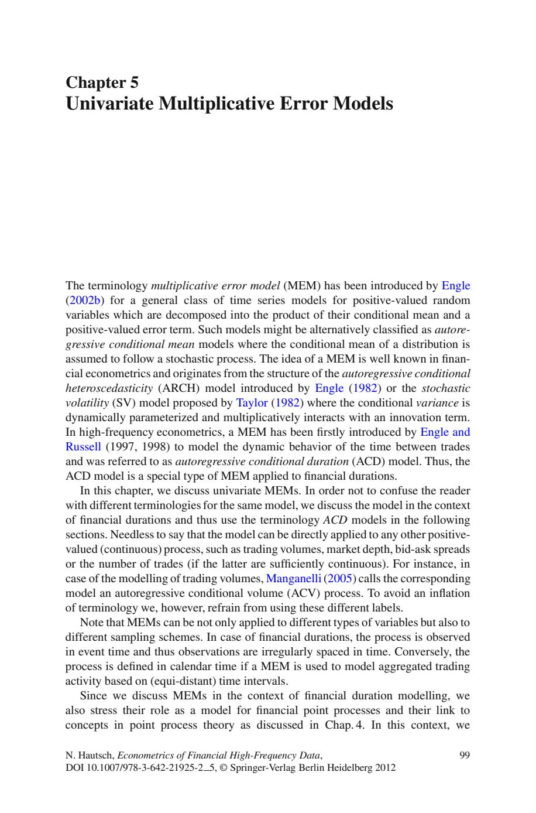</a><figcaption>PDF page 114 render</figcaption></figure>
<h3 id="pdf-page-115-printed-page-100">PDF page 115 / printed page 100<a class="heading-anchor" href="#pdf-page-115-printed-page-100" aria-label="この見出しへのリンク">#</a></h3>
<pre><code>100                                                       5 Univariate Multiplicative Error Models


illustrate the representation of an ACD model in terms of an intensity process. These
interpretations, however, are not meaningful if other variables than durations are
modelled.
    In Sect. 5.1, we discuss autoregressive models for log durations as a natural
starting point. In Sect. 5.2, we present the basic form of the autoregressive condi-
tional duration (ACD) model proposed by Engle and Russell (1997, 1998). Because
it is the most common type of autoregressive duration model and is extensively
considered in recent econometrics literature, we discuss theoretical properties
and estimation issues in more detail. Section 5.3 discusses (quasi) maximum
likelihood estimation of ACD models. In Sect. 5.4, the inclusion of covariates and
consideration of intraday periodicities is illustrated. A logarithmic specification
of the ACD model – the so-called Log ACD model – is discussed in Sect. 5.5.
Section 5.6 is devoted to specification tests for the ACD model. Here, we focus
on Portmanteau tests, independence tests, distribution tests as well as Lagrange
Multiplier and (integrated) conditional moment tests.


5.1 ARMA Models for Log Variables

A natural starting point for an autoregressive model for positive-valued variables
xi &gt; 0 is to specify an (autoregression) model for log variables. Since log variables
are not subject to non-negativity restrictions, traditional time series models are
easily applicable. Accordingly, a simple ARMA model for log variables is given
by
                        XP                X
                                          Q
           ln xi D ! C      ˛j ln xi j C   ˇj &quot;Qi j C &quot;Q i ; i D 1; : : : ; n; (5.1)
                        j D1                       j D1

where &quot;Q i is a white noise variable. If xi is a financial duration, the model belongs to
the class of AFT models (see Chap. 4). Then, covariates, including, in this context,
past durations, accelerate or decelerate the time to failure. A quasi maximum
likelihood (QML) estimator for  D .!; ˛; ˇ/0 is obtained by estimating the
model under the normality assumption for &quot;Qi , implying a conditional log normal
distribution for xi . Based on QML estimates, the empirical distribution of the
residuals &quot;OQ i yields a nonparametric estimate of the underlying distribution, and thus,
the baseline hazard.
   More sophisticated specifications are obtained by ARMA-GARCH type models.
For instance, the conditional mean function of ln xi can be specified according to
(5.1), while its conditional variance, hi , follows a standard GARCH process. Thus,
                               p
                      &quot;Qi D        hi ui ;      ui  N .0; 1/;

                                        X
                                        Ph                     X
                                                               Qh
                      hi D !h C                ˛h;j &quot;Q2ij C          ˇh;j hi j :          (5.2)
                                        j D1                   j D1</code></pre>
<figure class="page-render"><a href="../assets/page_renders/page-115.jpeg">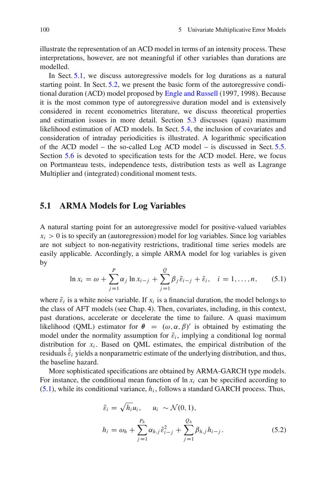</a><figcaption>PDF page 115 render</figcaption></figure>
<h3 id="pdf-page-116-printed-page-101">PDF page 116 / printed page 101<a class="heading-anchor" href="#pdf-page-116-printed-page-101" aria-label="この見出しへのリンク">#</a></h3>
<pre><code>5.1 ARMA Models for Log Variables                                                                           101


In case of trade durations or volume durations, hi is interpreted as a duration volatil-
ity which is economically associated with liquidity risk (see, for example, Ghysels
et al. 1998). By exploiting the asymptotic properties of the QML estimator of the
Gaussian GARCH model (see Bollerslev and Wooldridge 1992), the autoregressive
parameters of (5.1) and (5.2) are estimated consistently.1
    The separability of the conditional mean and the conditional variance of ln xi
is obviously implied by the normality assumption. However, such a separation
of the two first moments is not straightforward for plain variables. In general,
distributions defined on positive support typically imply a strict dependence between
the first moment and higher order moments and do not allow to disentangle the
conditional mean and variance function. Then, a parameterization of the conditional
mean implies per (distributional) assumption also a parameterization of higher
order conditional moments. Ghysels et al. (1998) argue that such distributional
assumptions are too restrictive and are not flexible enough to model duration
dynamics. For a deeper discussion of this issue, see Chap. 6.
    However, researchers are often not interested in models (and forecasts) of ln xi
but of xi . Dufour and Engle (2000) illustrate that the forecast performance of auto-
regressions in log-durations perform rather poorly compared to more sophisticated
ACD specifications as presented in the following subsection. Thus, an alternative
specification is given by a simple ARMA model for xi where the innovations follow
a distribution defined on positive support:

                                    X
                                    P                   X
                                                        Q
                       xi D ! C            ˛j xi j C          ˇj &quot;Qi j C &quot;Qi ;                       (5.3)
                                    j D1                j D1


where ! &gt; 0, ˛j  0, ˇj  0. A QML estimator for  D .!; ˛; ˇ/0 is obtained by
assuming a standard exponential distribution for &quot;Qi leading to the quasi maximum
likelihood function based on data X and parameters 
                                                   2                                                 3
                           X
                           n                X
                                            n                    X
                                                                 P                   X
                                                                                     Q
   ln LQML .XI / D              &quot;Qi D           4xi  !             ˛j xi j           ˇj &quot;Qi j 5 ;
                           i D1             i D1                 j D1                j D1
                                                                                                       (5.4)

which is the true log likelihood if the p.d.f. of &quot;Q i is the exponential density.
According to QML theory (see, e.g., Gouriéroux et al. 1984), correct specifications
of the conditional mean function ensure consistent estimation of .
   A drawback of this approach is that in this case, the marginal distribution of the
resulting duration process is not exponential. Thus, in difference to Gaussian ARMA
models, the relationship between the conditional distribution and the marginal


1
  For more details, see Sect. 5.3.1, where the asymptotic properties of the GARCH QML estimator
are carried over to ACD models.</code></pre>
<figure class="page-render"><a href="../assets/page_renders/page-116.jpeg">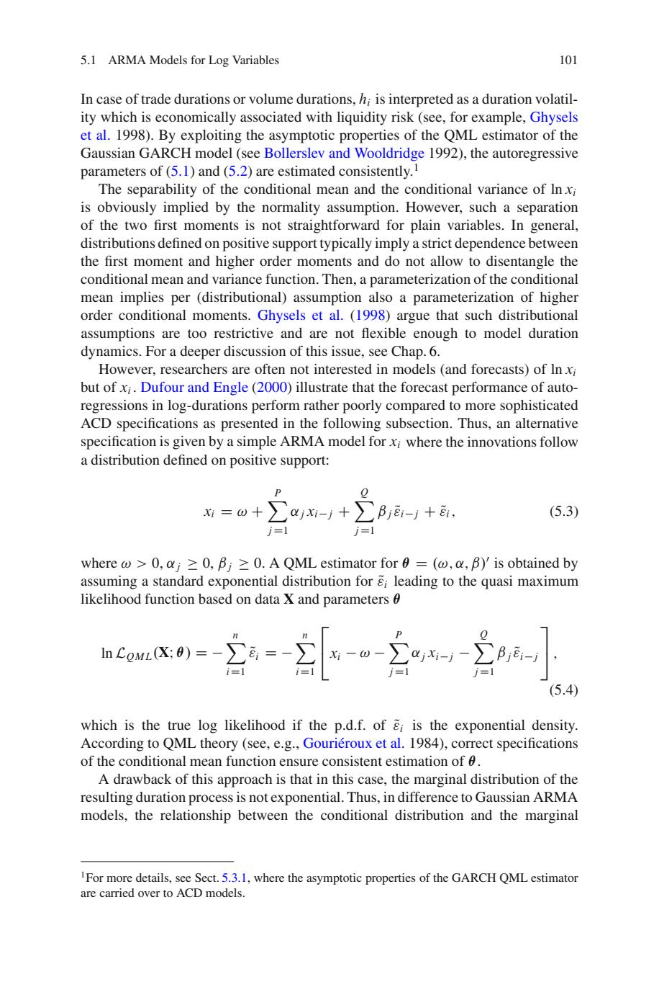</a><figcaption>PDF page 116 render</figcaption></figure>
<h3 id="pdf-page-117-printed-page-102">PDF page 117 / printed page 102<a class="heading-anchor" href="#pdf-page-117-printed-page-102" aria-label="この見出しへのリンク">#</a></h3>
<pre><code>102                                                    5 Univariate Multiplicative Error Models


distribution of xi is not obvious. Lawrence and Lewis (1980) propose an exponential
ARMA (EARMA) model which is based on i.i.d. exponential innovations and leads
to an exponential marginal distribution. This result is achieved by specifying a linear
autoregressive model for a stationary variable that is based on a probabilistic choice
between different linear combinations of independent exponentially distributed
random variables.


5.2 A MEM for Durations: The ACD Model

The most popular autoregressive duration approach and most common type of
MEM is proposed by Engle (1996, 2000) and Engle and Russell (1997, 1998). The
basic idea of the autoregressive conditional duration (ACD) model is a dynamic
parameterization of the conditional mean function

                            i WD i ./ D EŒxi jFti 1 I ;                            (5.5)

where  denotes a p 1 parameter vector. Here, Fti 1 denotes the information set up
to the most recent (irregularly spaced) observation ti 1 . As long as the exact timing
of the observation at ti is not important, it is sufficient to index all observations by i
and to denote the information set by Fi .
    It is assumed that the standardized durations
                                                  xi
                                        &quot;i WD                                            (5.6)
                                                  i

follow an i.i.d. process defined on positive support with EŒ&quot;i  D 1. Obviously, the
ACD model can be regarded as a GARCH model for duration data. Different types
of ACD models can be divided either by the choice of the functional form used for
the conditional mean function i or by the choice of the distribution for &quot;i .
   The basic ACD specification is based on a linear parameterization of the
conditional mean function

                                    X
                                    P                      X
                                                           Q
                        i D ! C            ˛j xi j C            ˇj i j :             (5.7)
                                    j D1                   j D1


A sufficient, however not necessary, condition for non-negativity of the process is
! &gt; 0 and ˛  0, ˇ  0.
  The ACD process can be rewritten in terms of an intensity representation
                                                           !
                                                x.t/               1
                         .tI Ft / D Q &quot;                                 ;              (5.8)
                                              NQ .t /C1       NQ .t /C1</code></pre>
<figure class="page-render"><a href="../assets/page_renders/page-117.jpeg">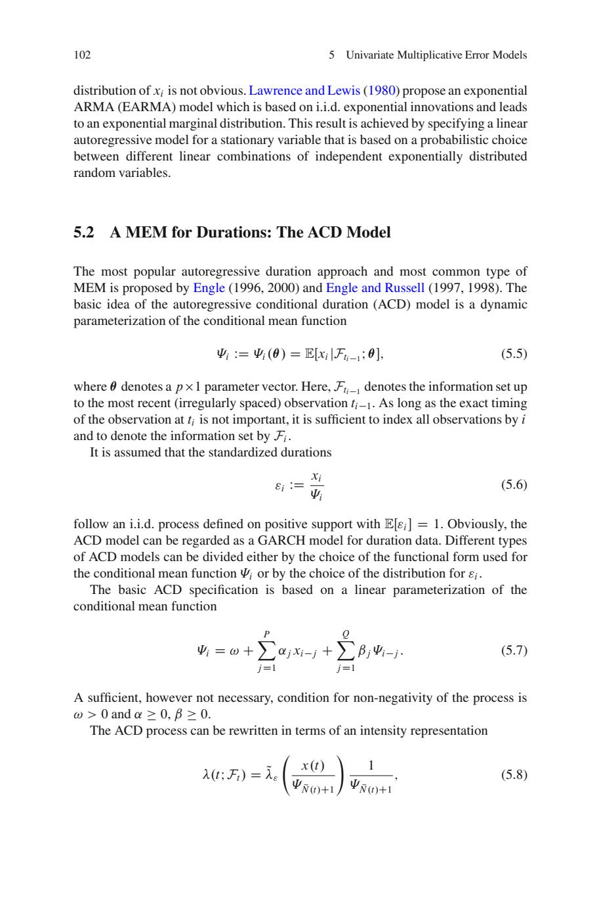</a><figcaption>PDF page 117 render</figcaption></figure>
<h3 id="pdf-page-118-printed-page-103">PDF page 118 / printed page 103<a class="heading-anchor" href="#pdf-page-118-printed-page-103" aria-label="この見出しへのリンク">#</a></h3>
<pre><code>5.2 A MEM for Durations: The ACD Model                                               103


where Q &quot; .s/ denotes the hazard function of the ACD innovation &quot;i . This represen-
tation shows that the ACD model belongs to the class of AFT models since past
dynamics influence the rate of failure time. Changes of the intensity function during
a spell are only induced by the hazard shape of &quot;i while new information enters
the model exclusively at the particular points ti . As suggested by Hamilton and
Jorda (2002), (5.8) can be used as the starting point for generalized specifications by
directly parameterizing the intensity function and allowing for news arrival within a
spell. As soon as time-varying covariates are taken into account, such specifications
require to switch from a duration setting to an intensity setting. This is discussed in
more detail in Chap. 11.
    The basic idea of the ACD model is to (dynamically) parameterize the condi-
tional duration mean rather than the intensity function itself. Thus, the complete
dynamic structure as well as the influence of covariates is captured by the function
i which per construction can only be updated at the points ti .
    The conditional mean of the ACD model is given by definition as EŒxi jFi 1  D
i , whereas the unconditional mean and the conditional variance are
                                                               !
                    EŒxi  D EŒi   EŒ&quot;i  D        PP           PQ          ;    (5.9)
                                                 1    j D1 ˛j      j D1 ˇj

                               VŒxi jFi 1  D i2  VŒ&quot;i :                       (5.10)

For the case P D Q D 1, the unconditional variance of xi is given by2
                                                                     
                                                 1  ˇ 2  2˛ˇ
                     VŒxi  D EŒxi  VŒ&quot;i 
                                     2
                                                                        :          (5.11)
                                            1  .˛ C ˇ/2  ˛ 2 VŒ&quot;i 

Correspondingly, the autocorrelation function is derived as

                                                   ˛1 .1  ˇ12  ˛1 ˇ1 /
                        1 WD Cov.xi ; xi 1 / D                         ;         (5.12)
                                                    1  ˇ12  2˛1 ˇ1
                        n D .˛ C ˇ/n1         for n  2.                        (5.13)

Accordingly, covariance stationarity conditions of the ACD model are similar to the
covariance stationarity conditions of the GARCH model (see Bollerslev 1986) and
are satisfied by

                                  .˛ C ˇ/2  ˛ 2 VŒ&quot;i  &lt; 1:

 The corresponding results for higher-order ACD models are similar but more
cumbersome to compute. It is easy to see that VŒxi  &gt; EŒxi 2 , thus, the ACD
model implies excess dispersion, i.e., the unconditional standard deviation exceeds


2
    In the case P D Q D 1, we set ˛ WD ˛1 and ˇ WD ˇ1 .</code></pre>
<figure class="page-render"><a href="../assets/page_renders/page-118.jpeg">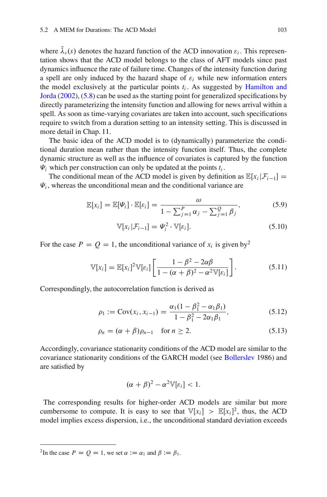</a><figcaption>PDF page 118 render</figcaption></figure>
<h3 id="pdf-page-119-printed-page-104">PDF page 119 / printed page 104<a class="heading-anchor" href="#pdf-page-119-printed-page-104" aria-label="この見出しへのリンク">#</a></h3>
<pre><code>104                                                             5 Univariate Multiplicative Error Models


the unconditional mean. This property might be regarded as the counterpart to the
“overkurtosis property” of the Gaussian GARCH model. General formulations of
lower and upper bounds for the p.d.f. of the duration process implied by an ACD
(P , Q) model are given by Fernandes (2004).
   By introducing the martingale difference i WD xi  i , the ACD(P; Q) model
can be written in terms of an ARMA(max(P ,Q),Q) model for plain durations

                                     X
                                  max.P;Q/
                                                                       X
                                                                       Q
                     xi D ! C                   .˛j C ˇj /xi j              ˇj i j C i :    (5.14)
                                     j D1                              j D1


5.3 Estimation of the ACD Model

5.3.1 QML Estimation

A natural choice for the distribution of &quot;i is the exponential distribution. As
discussed in Chap. 4, the exponential distribution is the central distribution for
stochastic processes defined on positive support and can be seen as the counterpart
to the normal distribution for random variables defined on R. Consequently, the
specification of an Exponential-ACD (EACD) model is a natural starting point.
Though the assumption of an exponential distribution is quite restrictive for many
applications,3 it has the major advantage of leading to a QML estimator for the ACD
parameters. The exponential quasi log likelihood function is given by

                                            X
                                            n                   n 
                                                                X             
                                                                           xi
                         ln L.XI / D              li ./ D       ln i C      ;                (5.15)
                                                                           i
                                            i D1                i D1


where li ./ denotes the log likelihood contribution of the i th observation. The score
and the Hessian are given by

                                X n           X n            
                 @ ln L.XI /                      @i 1 xi
         s./ WD              D      si ./ D              1 ;                                 (5.16)
                      @        i D1          i D1
                                                   @ i i

                   @2 ln L.XI /   X        n
       H./ WD                   D   hi ./
                       @@ 0
                                           i D1
                                    n 
                                    X                                             
                                              @    1 @i    xi         1 @i @i xi
                                D                               1                     ;
                                    i D1
                                             @ 0 i @     i         i @ @ 0 i2

                                                                                                 (5.17)


3
    See also the descriptive statistics in Chap. 3.</code></pre>
<figure class="page-render"><a href="../assets/page_renders/page-119.jpeg">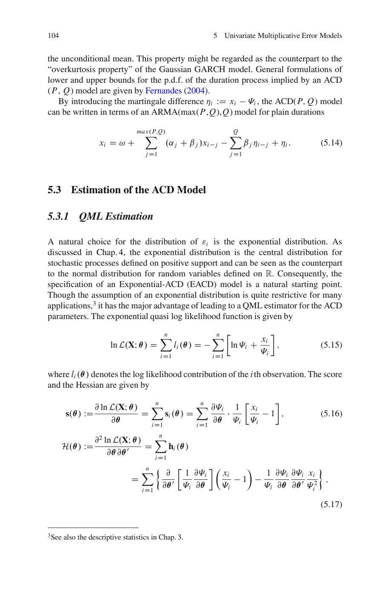</a><figcaption>PDF page 119 render</figcaption></figure>
<h3 id="pdf-page-120-printed-page-105">PDF page 120 / printed page 105<a class="heading-anchor" href="#pdf-page-120-printed-page-105" aria-label="この見出しへのリンク">#</a></h3>
<pre><code>5.3 Estimation of the ACD Model                                                         105


where si ./ is a p  1 vector denoting the i th contribution to the score vector
and hi ./ is a p  p matrix denoting the i th contribution to the Hessian matrix.
Under correct specification of the model, i.e., i D i;0 , where i;0 WD i . 0 / D
E Œ xi j Fi 1 I  0  denotes the “true” conditional mean function, it follows that &quot;i D
xi =i is stochastically independent of i and has an expectation of one. Hence,
the score si ./ is a martingale difference with respect to the information set Fi 1
and

                                      X
                                      n                        X n
                                                                    1 @i;0 @i;0
                EŒH. 0 /jFi 1  D          hQ i . 0 / D                       ;   (5.18)
                                      i D1
                                                                    2
                                                               i D1 i;0
                                                                        @ @ 0

where hQ i ./ WD E Πhi ./j Fi 1 .
    The correct specification of the conditional mean function is an essential
prerequisite to establish the QML property of the EACD estimator. Engle (2000)
illustrates that the results of Bollerslev and Wooldridge (1992) can be directly
applied to the EACD model. These results are summarized in the following
theorem:
Theorem 5.1. Assume the following regularity conditions:
   (i)  is a compact parameter space and has nonempty interior;  is a subset of
       Rp .
  (ii) For some  0 2 int./, E Πxi j Fi 1 I  0  D i . 0 / WD i;0 .
 (iii) (a) i ./ WD i is measurable for all  2  and is twice continuously
       differentiable on int  for all xi ;
       (b) i is positive with probability one for all  2 .        P
 (iv) (a)  0 is the identifiable unique maximizer of n1 niD1 EŒli ./  li . 0 /;
       (b) fli ./  li . 0 /g satisfies the UWLLN 8 i D 1; 2; : : : ; n.4
  (v) (a) fhi . 0 /g and fhQ i . 0 /g satisfy the UWLLN;
       (b) fhi ./  hiP   . 0 /g satisfies the UWLLN;
       (c) Aı WD n1 niD1 EŒhQ i . 0 / is uniformly positive definite.
                             0
 (vi) (a) fsi . 0 /si .P0 / g satisfies the UWLLN;
             ı       1      n                        0
       (b) B WD n            i D1 EŒsi . 0 /si . 0 /  is uniformly positive definite;
                             P                           d
       (c) Bı1=2 n1=2 niD1 si . 0 /si . 0 /0 !N .0; Ip / with Ip denoting the p-
       dimensional identity matrix.
(vii) (a) fhQ i ./  hQ i . 0 /g satisfies the UWLLN;
       (b) fsi ./si ./0  si . 0 /si . 0 /0 g satisfies the UWLLN.
Then,
                      ı1 ı ı1 1=2 p
                                        n.O   0 / ! N .0; Ip /:
                                                     d
                      A B A


4
    UWLLN: Uniform Weak Law of Large Numbers.</code></pre>
<figure class="page-render"><a href="../assets/page_renders/page-120.jpeg">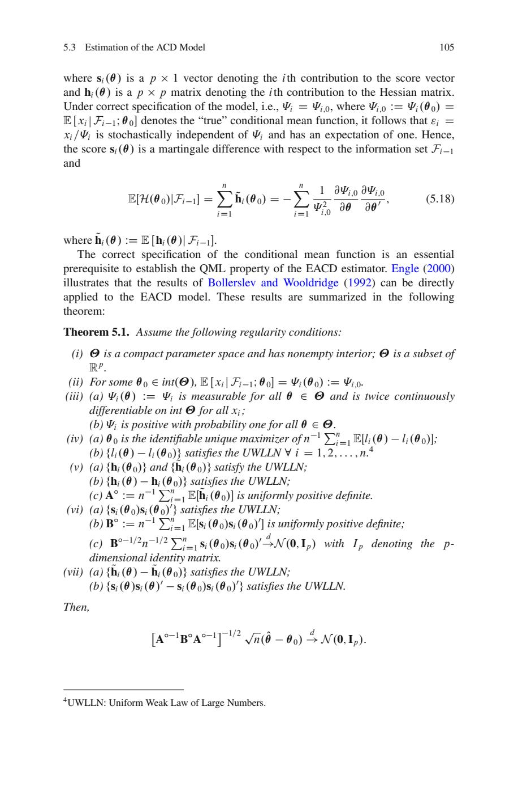</a><figcaption>PDF page 120 render</figcaption></figure>
<h3 id="pdf-page-121-printed-page-106">PDF page 121 / printed page 106<a class="heading-anchor" href="#pdf-page-121-printed-page-106" aria-label="この見出しへのリンク">#</a></h3>
<pre><code>106                                                       5 Univariate Multiplicative Error Models


Furthermore,
                               p                                        p
                    O ı  Aı ! 0
                    A                          and            BO ı  Bı ! 0;

where

                  X n
                                                                  1X O
                                                                      n
           Oı D 1
           A                 O
                       hQ i ./              and           BO ı D                  O 0:
                                                                         si ./si ./
                n i D1                                            n i D1

Proof: See Bollerslev and Wooldridge (1992), p. 167.                                
   This theorem illustrates that the maximization of the quasi log likelihood function
(5.15) leads to a consistent estimate of  without specifying the density function
of the disturbances. As pointed out by Bollerslev and Wooldridge (1992), the
matrix Aı1 Bı Aı1 is a consistent
                          p          estimator of the White (1982) robust asymptotic
variance covariance of n.O   0 /. A variance covariance estimator that is
robust not only against distributional misspecification but also against dynamic
misspecification in the ACD errors is obtained by following Newey and West (1987)
and estimating Bı by

                                      J 
                                      X                 
                                                     j
                       BO ı D O0 C      1               .Oj C Oj0 /;
                                      j D1
                                                   J C1

where

                                               X
                                               n
                              Oj WD n1                    O i ./
                                                        si ./s  O 0
                                              i Dj C1


and J denotes the exogenously given truncation lag order. The assumptions of
Bollerslev and Wooldridge (1992) are quite strong since they require asymptotic
normality of the score vector and uniform weak convergence of the likelihood
and its second derivative. Moreover, as shown in Chap. 3, typical high-frequency
duration processes (like, for example, trade duration processes) are highly persistent
and nearly integrated. In the integrated case, the unconditional mean of i is not
finite leading to non-normal limiting distributions of the estimator. In order to cope
with these problems, Lee and Hansen (1994) establish the asymptotic properties
for the IGARCH QML estimator under weaker assumptions than in Bollerslev and
Wooldridge (1992). Engle and Russell (1998) illustrate that these results are easily
carried over to the EACD(1,1) case. The main results of Lee and Hansen (1994) are
summarized as follows:
Theorem 5.2. Assume the following regularity conditions:
  (i)  0 D .!0 ; ˛0 ; ˇ0 /0 2 int./.
 (ii) E Œ xi j Fi 1 I  0  WD i . 0 / D i;0 D !0 C ˛0 xi 1 C ˇ0 i 1 .</code></pre>
<figure class="page-render"><a href="../assets/page_renders/page-121.jpeg">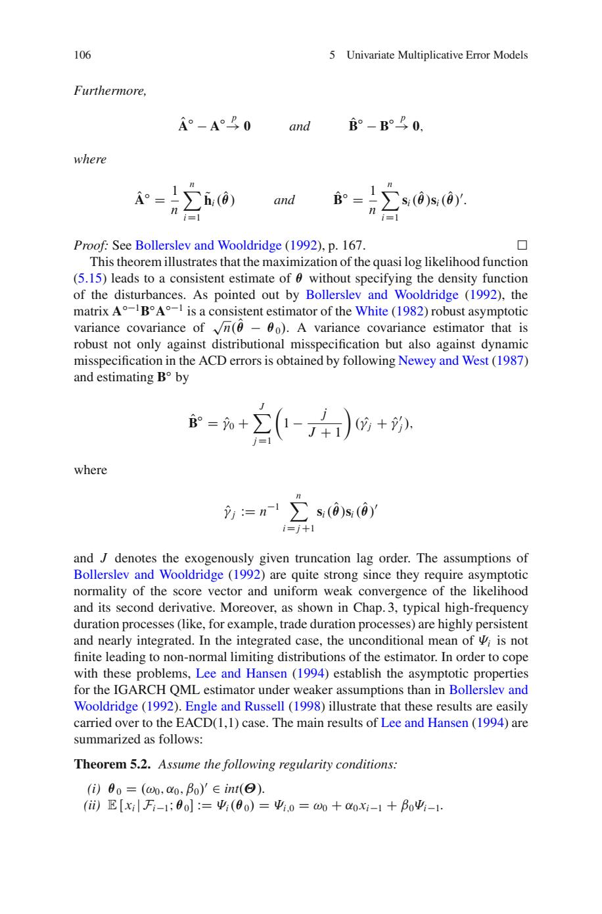</a><figcaption>PDF page 121 render</figcaption></figure>
<h3 id="pdf-page-122-printed-page-107">PDF page 122 / printed page 107<a class="heading-anchor" href="#pdf-page-122-printed-page-107" aria-label="この見出しへのリンク">#</a></h3>
<pre><code>5.3 Estimation of the ACD Model                                                     107


 (iii) &quot;i D xi =i;0 is strictly stationary and ergodic.
  (iv) &quot;i is non-degenerate.
              ˇ
   (v) E &quot;2i ˇ Fi 1 &lt; 1 a.s.
  (vi) supi E Œ ln ˇ0 C ˛0 &quot;i j Fi 1  &lt; 0 a:s: h        i
                       P                   P
 (vii) ln L.XI / D niD1 li ./ D  niD1 ln i C xii ; where i D ! C˛xi 1 C
       ˇi 1 .                                         P
(viii)  0 is the identifiable unique maximizer of n1 niD1 EŒli ./  li . 0 /.
Then,
                                      1=2 p                d
                        Aı1 Bı Aı1          n.O   0 / ! N .0; Ip /

and
                                     p                            p
                            O ı  Aı !
                            A          0     and BO ı  Bı ! 0:

Proof: See Lee and Hansen (1994), p. 47ff.                                            
   These results are also valid in case of ˛ C ˇ D 1. Moreover, the standardized
durations are not necessarily assumed to follow an i.i.d. process. It is rather required
that they are strictly stationary and ergodic. This property generalizes the results
of Bollerslev and Wooldridge (1992) to a broader class of models, including, for
example, the class of so-called semiparametric ACD models introduced by Drost
and Werker (2004) (see Chap. 6). Note that these results are based on the linear
EACD(1,1) model and cannot necessarily carried over to more general cases, like
(nonlinear) EACD(P ,Q) models. In any case, a crucial requirement for the QML
estimation of the ACD model is the validity of the conditional mean restriction, i.e.,
the correct specification of the conditional mean function i . This assumption will
be explored in more detail in Sect. 5.6.
   The consistency of the Exponential QML estimator is inherently related to the
fact that its score function corresponds to an unconditional moment function with
the property

                        EŒsi . 0 / D 0;    0 2 ;     i D 1; : : : ; n:       (5.19)

This allows to construct corresponding moment estimators. As discussed by Drost
and Werker (2004) and Engle and Gallo (2006), this relationship can be alternatively
achieved by choosing a Gamma distribution. From (5.16) it is easily seen that the
Exponential QML score contribution of a single observation i can be written as

                                                      @
                                 si ./ D .&quot;i  1/      ln i :                  (5.20)
                                                     @
Then, assuming the ACD innovations &quot;i to follow a normalized Gamma distributed,
i.e., &quot;i  G.m; m/ with EŒ&quot;i  D 1 (see appendix A) and p.d.f.</code></pre>
<figure class="page-render"><a href="../assets/page_renders/page-122.jpeg">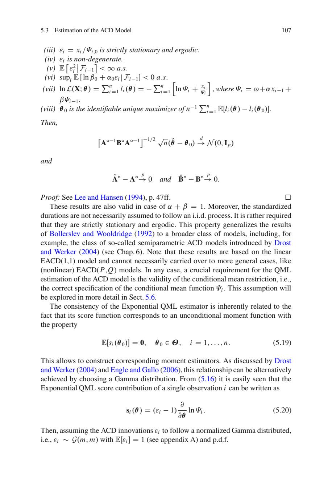</a><figcaption>PDF page 122 render</figcaption></figure>
<h3 id="pdf-page-123-printed-page-108">PDF page 123 / printed page 108<a class="heading-anchor" href="#pdf-page-123-printed-page-108" aria-label="この見出しへのリンク">#</a></h3>
<pre><code>108                                                    5 Univariate Multiplicative Error Models


                                     &quot;m1 exp.&quot;i =m/
                      fm .&quot;i / D      i
                                                      ;          m &gt; 0;
                                        mm  .m/

it is easily shown that the resulting score function can be written as

                                 @fm .&quot;i / 1
                        1 C &quot;i                 D m.1  &quot;i /;                            (5.21)
                                   @m fm .&quot;i /

which is proportional to (5.20) yielding the same underlying moment function
(5.19). Consequently, the estimator based on a Gamma distribution is identical to
the one obtained from an exponential quasi maximum likelihood procedure. Its main
advantage is to allow for more flexibility due to an additional parameter m. However,
note that the Gamma distribution for m ¤ 1 is only defined for positive random
variables whereas the exponential distribution (i.e., the case m D 1) is also defined
for zero realizations. Hence, in cases, where zero or near-to-zero observations
or present in the data, the maximization of a gamma log likelihood might cause
numerical difficulties. As a further alternative, Brownlees et al. (2011) recommend
estimating the model by the method of moments using optimal instruments. In
particular, they show that the efficient moment estimator of  solves the moment
conditions
                                                         
                           1 X @i 1
                                 n
                                                     xi
                                                       1 D0                           (5.22)
                           n i D1 @ i               i

with the asymptotic covariance given by
                                     (                            ) 1
                                              1X
                                                 n
                  O D VŒ&quot;i 
               AV./                      lim       E
                                                        @i @i 2
                                                                        ;              (5.23)
                       n                 n!1 n
                                               i D1
                                                        @ @ 0 i

which is consistently estimated by
                                             &quot; n                      #1
                                              X @O i @O i
                      c /O D VŒ&quot;
                              O i                             O 2
                      AV.                                    0 i           ;
                                                     @ @
                                              i D1

                                 X n
                        O i D 1
                        VŒ&quot;           .xi =O i  1/2 :
                               n i D1

   As illustrated by Engle and Russell (1998), an important implication of the strong
analogy between the Gaussian GARCH model and the Exponential ACD model is
that the ACD model can be estimated by GARCH software. In particular, the ACD
                                                  p
parameter vector  can be estimated by taking xi as the dependent variable in
a GARCH regression where the conditional mean is set to zero. Therefore, given</code></pre>
<figure class="page-render"><a href="../assets/page_renders/page-123.jpeg">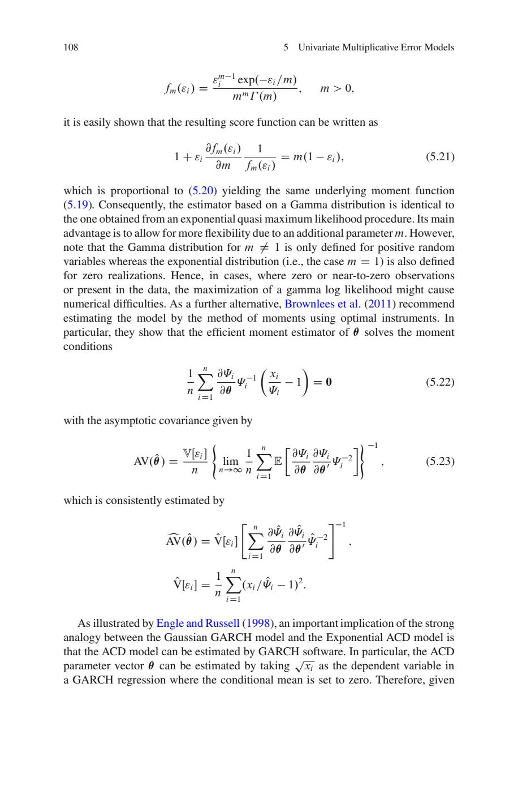</a><figcaption>PDF page 123 render</figcaption></figure>
<h3 id="pdf-page-124-printed-page-109">PDF page 124 / printed page 109<a class="heading-anchor" href="#pdf-page-124-printed-page-109" aria-label="この見出しへのリンク">#</a></h3>
<pre><code>5.3 Estimation of the ACD Model                                                   109


the QML properties of the EACD model, the parameter estimates O are consistent,
however not necessarily efficient.
   Indeed, summary statistics of financial durations (see Chap. 3) show that the
assumption of an exponential distribution for the standardized durations typically
does not hold. Thus, QML parameter estimates can be biased in finite samples.
Grammig and Maurer (2000) analyze the performance of different ACD speci-
fications based on Monte Carlo studies and show that the QML estimation of
these models may perform poorly in finite samples, even in quite large samples
such as 15,000 observations. For this reason, they propose to specify the ACD
model based on more general distributions. Bauwens et al. (2004) investigate the
predictive performance of ACD models by using density forecasts. They illustrate
that the predictions can be significantly improved by allowing for more flexible
distributions. In these cases, the ACD model is not estimated by QML but by
standard ML.


5.3.2 ML Estimation

In duration literature, a standard way to obtain more flexible distributions is to use
mixture models. In this framework, a specific parametric family of distributions is
mixed with respect to a heterogeneity variable leading to a mixture distribution.5
The most common mixture model is obtained by multiplying the integrated hazard
rate by a random heterogeneity term. In most applications, a gamma distributed
random variable is used leading to a mixture model which is analytically tractable
and allows for the derivation of simple results.
   Below, we give a small classification over the most common types of mixture
models leading to a flexible family of distributions. Consider a Weibull distribution
which can be written in the form
                                          x  u
                                            D ;        a &gt; 0;
                                            a

where  and a are the scale and shape parameter of the distribution, respectively,
and u is a random variable which follows an unit exponential distribution. Note
that in this case, .x=/a is the integrated hazard function. A gamma mixture of
Weibull distributions is obtained by multiplying the integrated hazard by a random
heterogeneity term following a gamma distribution v  G.; / with mean EŒv D 1
and variance VŒv D 1 . Then, the resulting mixture model follows a Burr
distribution with parameters , a and .
   More flexible models are obtained by a generalization of the underlying Weibull
model and by assuming that u  G.m; m/ leading to a duration model based on the


5
    For an overview of mixture distributions, see, e.g., Lancaster (1997).</code></pre>
<figure class="page-render"><a href="../assets/page_renders/page-124.jpeg">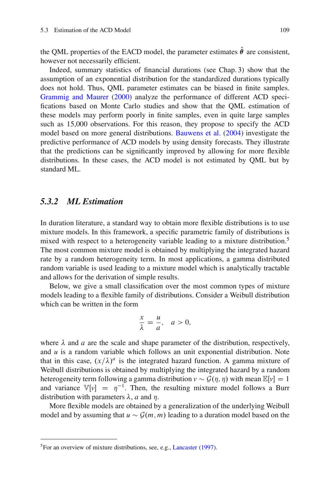</a><figcaption>PDF page 124 render</figcaption></figure>
<h3 id="pdf-page-125-printed-page-110">PDF page 125 / printed page 110<a class="heading-anchor" href="#pdf-page-125-printed-page-110" aria-label="この見出しへのリンク">#</a></h3>
<pre><code>110                                                   5 Univariate Multiplicative Error Models


generalized gamma distribution. The generalized gamma family of density functions
nests the Weibull family when m D 1 and the (two-parameter) gamma distribution
when a D 1.
   Both types of distributions have been already successfully applied in the ACD
framework leading to the Burr ACD model (Grammig and Maurer 2000) and the
generalized gamma ACD model (Lunde 2000). However, both models belong to
different distribution families and are not nested. An extension of the generalized
gamma ACD model which also nests one member of the Burr family is based on a
gamma mixture of the generalized gamma distribution leading to the generalized F
distribution (see Kalbfleisch and Prentice 1980 or Lancaster 1997). The generalized
F distribution is obtained by assuming the generalized gamma model as basic
duration model and multiplying the integrated hazard by a gamma variate v 
G.; /. Then, the marginal density function of x is given by

                                  ax am1 ΠC .x=/a .m/ 
                      f .x/ D                                    ;                     (5.24)
                                           am B.m; /

where B./ describes the complete Beta function with B.m; / D .m/ ./
                                                                  .mC/
                                                                          : The
moments of the generalized F distribution are given by

                                   .m C s=a/ .  s=a/
                EŒx s  D 1=a                          ;         s &lt; a:             (5.25)
                                         .m/ ./

Hence, the generalized F ACD model as introduced by Hautsch (2003) is based on
three parameters a, m and , and thus, nests the generalized gamma ACD model
for  ! 1, the Weibull ACD model for m D 1;  ! 1 and the log-logistic
ACD model for m D  D 1. For a discussion of even more special cases of the
Generalized F distribution, see Karanasos (2008). Figures 5.1–5.3 show the hazard
functions implied by the generalized F distribution based on different parameter
combinations. If an ACD process is specified based on a distribution with mean
unequal to one (i.e., other than the exponential distribution), it can be without loss
of generality written as

                                xi D i 1 &quot;Qi DW ˚i &quot;Qi ;                             (5.26)

where &quot;Qi denotes the error term with     WD EŒQ&quot;i  ¤ 1 and
                                          !       ˛
                       ˚i WD i = D           C       xi 1 C ˇ˚i 1

                                       D !Q C ˛x
                                              Q i 1 C ˇ˚i 1                          (5.27)

with !Q WD != and ˛Q WD ˛= .
   Hence, to specify an ACD model, for instance, based on the generalized F
distribution,  and EŒi  D !=.1  ˛  ˇ/ are not simultaneously identifiable.</code></pre>
<figure class="page-render"><a href="../assets/page_renders/page-125.jpeg">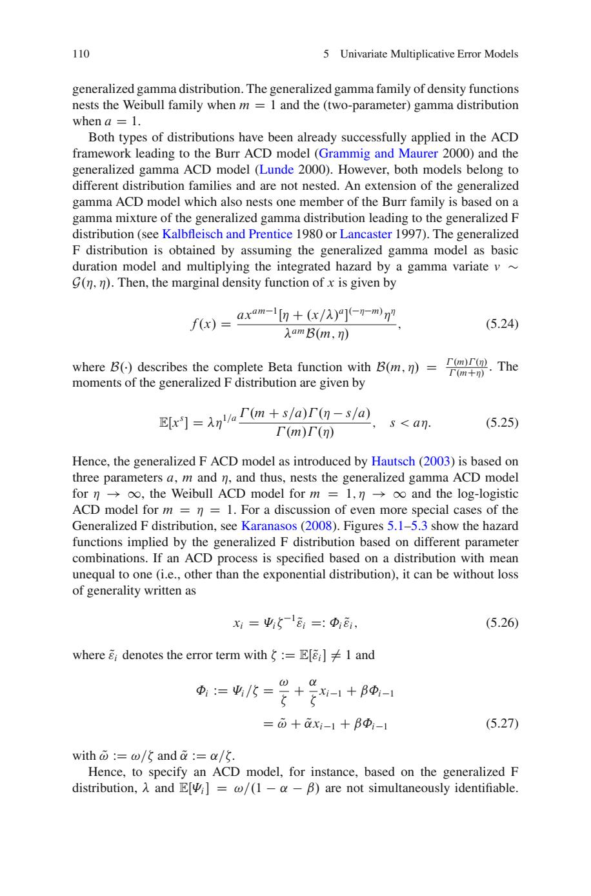</a><figcaption>PDF page 125 render</figcaption></figure>
<h3 id="pdf-page-126-printed-page-111">PDF page 126 / printed page 111<a class="heading-anchor" href="#pdf-page-126-printed-page-111" aria-label="この見出しへのリンク">#</a></h3>
<p><strong>Detected figure/table caption(s) on this page:</strong></p>
<ul>
<li>Fig. 5.1 Hazard functions implied by the generalized F distribution. Left: m D 0:8, a D 0:8,</li>
<li>Fig. 5.2 Hazard functions implied by the generalized F distribution. Left: m D 1:4, a D 0:9,</li>
<li>Fig. 5.3 Hazard functions implied by the generalized F distribution. Left: m D 1:21 , a D 1:2,</li>
</ul>
<pre><code>5.3 Estimation of the ACD Model                                                            111


Fig. 5.1 Hazard functions implied by the generalized F distribution. Left: m D 0:8, a D 0:8,
 D 1:0, upper:  D 100, middle:  D 10, lower:  D 0:5. Right: m D 0:8, a D 1:1,  D 1:0,
upper:  D 100, middle:  D 10, lower:  D 0:5


Fig. 5.2 Hazard functions implied by the generalized F distribution. Left: m D 1:4, a D 0:9,
 D 1:0, upper:  D 100, middle:  D 10, lower:  D 0:5. Right: m D 1:4, a D 1:2,  D 1:0,
upper:  D 100, middle:  D 10, lower:  D 0:5


Fig. 5.3 Hazard functions implied by the generalized F distribution. Left: m D 1:21 , a D 1:2,
 D 1:0, upper:  D 100, middle:  D 10, lower:  D 0:5. Right: m D 1:2, a D 1:21 ,  D 1:0,
upper:  D 100, middle:  D 10, lower:  D 0:5</code></pre>
<figure class="page-render"><a href="../assets/page_renders/page-126.jpeg">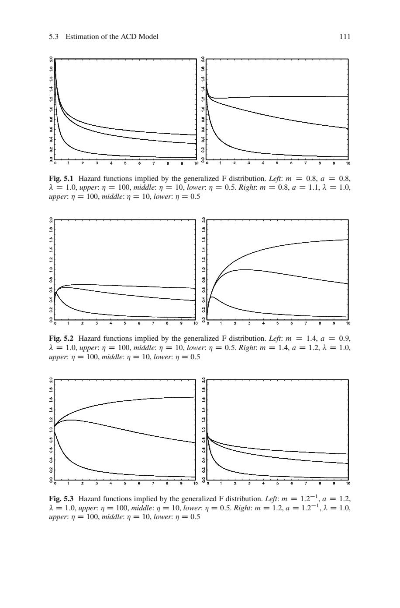</a><figcaption>PDF page 126 render</figcaption></figure>
<h3 id="pdf-page-127-printed-page-112">PDF page 127 / printed page 112<a class="heading-anchor" href="#pdf-page-127-printed-page-112" aria-label="この見出しへのリンク">#</a></h3>
<pre><code>112                                                   5 Univariate Multiplicative Error Models


Therefore, either  or ! have to be fixed. It is more natural to fix  D 1 and to
choose as

                                  1=a  .m C 1=a/ .  1=a/
                              D                               :
                                            .m/ ./

The generalized F ACD specification is given by (5.26) with &quot;Qi being generalized F
distributed with  D 1. Then, applying the change of variables theorem the density
of xi and thus the corresponding log likelihood function is given by

                     X
                     n
                            .m C /
      ln L.XI / D       ln           C log a  am log ˚i C .am  1/ ln xi
                     i D1
                            .m/ ./
                                 
                      . C m/ ln  C .˚i1 xi /a C  ln./:               (5.28)

This specification is equivalent to setting  D ˚ and dynamically parameterizing
it according to (5.27) by setting i D ˚i : Alternative distributions employed
for ACD models are the Pareto distribution (see Luca and Zuccolotto 2006) or
generalizations of the generalized F distribution (see Karanasos 2004). Note that any
generalizations of the exponential distribution require the strict positiveness of xi .
Hence, in case of zero observations, the model has to be estimated either by QML
based on the exponential distribution, by (G)MM or by ML employing sufficiently
flexible distributions which explicitly account for zero observations. In this context,
Hautsch et al. (2010) propose a zero-augmented generalized F distribution and
implement it in a MEM framework.
   Alternatively, even more flexible distributions for ACD models are obtained by
mixture distributions with time-varying weights. De Luca and Gallo (2009) propose
a mixture of exponentials with time-varying weights and show that the resulting
distribution successfully captures also the occurrence of duration observations in
the tails.
   Finally, besides the family of gamma mixture distributions, another natural
distribution for positive-valued random variables is the log-normal distribution with
p.d.f.
                                                                  2 !
                                      1           1       ln x 
                     f .x/ D          p     exp                          ;            (5.29)
                                  x       2       2

where and denote the corresponding location and scale parameters, respectively,
implying EŒx D exp C 2 =2 and VŒx D exp 2 C 2 exp. 2 /  1 . As
shown in Sect. 5.5, specifying an ACD model based on a log-normal distribution
is particularly useful in cases where the conditional mean function follows a
logarithmic specification as well and allows to carry over Gaussian QML properties.</code></pre>
<figure class="page-render"><a href="../assets/page_renders/page-127.jpeg">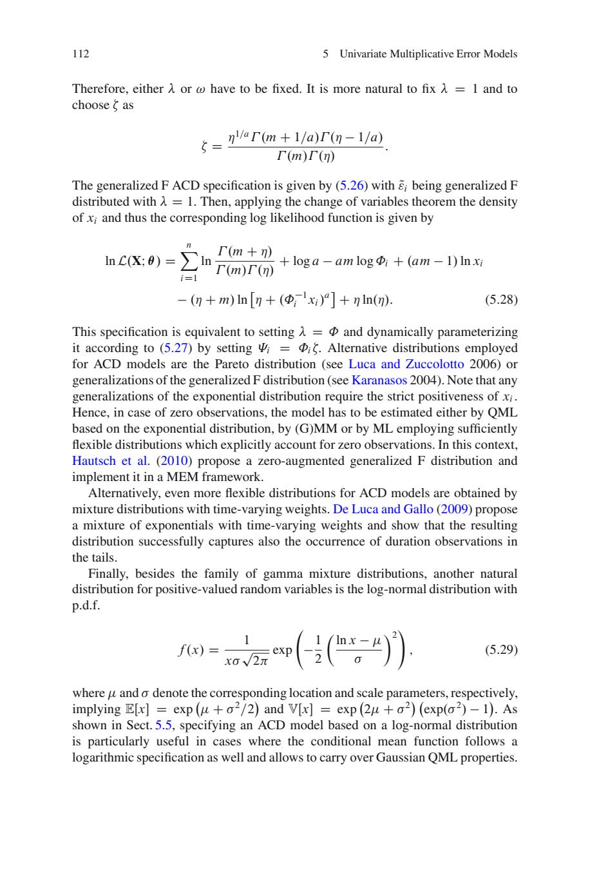</a><figcaption>PDF page 127 render</figcaption></figure>
<h3 id="pdf-page-128-printed-page-113">PDF page 128 / printed page 113<a class="heading-anchor" href="#pdf-page-128-printed-page-113" aria-label="この見出しへのリンク">#</a></h3>
<pre><code>5.4 Seasonalities and Explanatory Variables                                        113


5.4 Seasonalities and Explanatory Variables

As illustrated in Chap. 3, financial duration processes are typically subject to strong
intraday periodicities. One common solution in the ACD framework is to generate
seasonally adjusted series by partialling out the time-of-day effects. In this context,
the durations are decomposed into a deterministic and stochastic component. Engle
and Russell (1998) assume that deterministic seasonality effects act multiplicatively,
thus

                                         xi D xM i si ;                         (5.30)

where xM i denotes the seasonal adjusted duration and si the seasonality component
at i . Then, the conditional mean is given by

                             i D E ΠxM i j Fi 1  si DW M i si :            (5.31)

The deterministic seasonality function si can be specified in different ways.
Obviously, the most simple way to account for seasonalities is to include appropriate
dummy variables, i.e.,

                                        X
                                        Q
                                 si D          ıj 1l j 1 ti &lt; j ;             (5.32)
                                        j D1


where ıj are parameters to be estimated and j , j D 0; 1; : : : ; Q , denote
exogenously chosen (calendar) time points splitting the trading day into Q C 1
intervals (with Q chosen before the end of the trading day to ensure identification
of the constant ! in i ).
   While seasonality dummies capture the deterministic pattern in terms of piece-
wise constant functions, a linear spline function allows for a piecewise linear
function defined over the knots j . It is given by

                                        X
                                        Q
                            si D 1 C           ıj .ti  j /1l fti &gt; j g         (5.33)
                                        j D1


and is normalized to one at the beginning of the trading day to ensure the
identification of !. The linear spline function can be extended to a quadratic or
cubic spline function where the (piecewise) linear functions are replaced by second
or third order polynomials, respectively. See, e.g., de Boor (1978).
   An alternative and common specification is to use the flexible Fourier series
approximation proposed by Andersen and Bollerslev (1998b) based on the work
of Gallant (1981). Assuming a polynomial of degree Q, the non-stochastic seasonal
trend term is of the form</code></pre>
<figure class="page-render"><a href="../assets/page_renders/page-128.jpeg">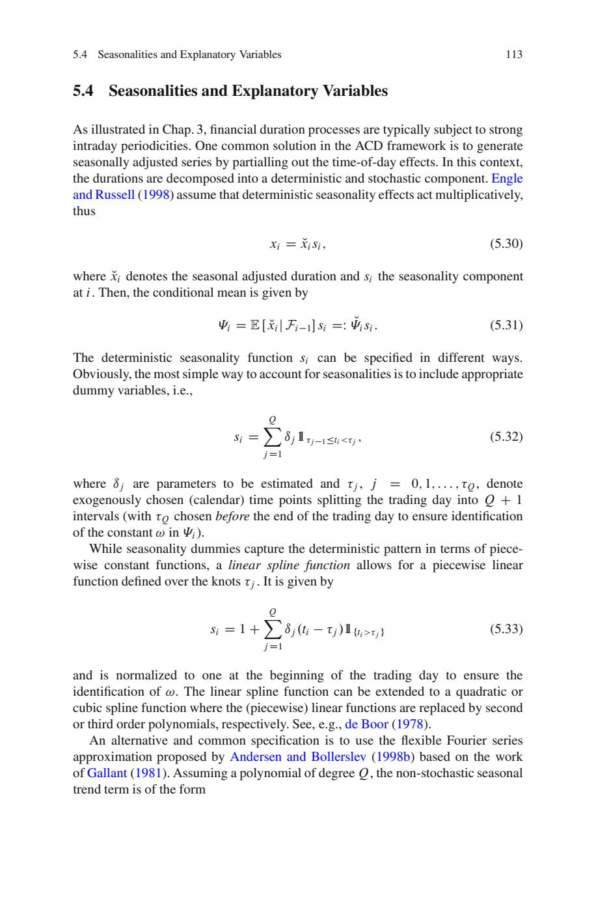</a><figcaption>PDF page 128 render</figcaption></figure>
<h3 id="pdf-page-129-printed-page-114">PDF page 129 / printed page 114<a class="heading-anchor" href="#pdf-page-129-printed-page-114" aria-label="この見出しへのリンク">#</a></h3>
<pre><code>114                                                            5 Univariate Multiplicative Error Models


                                       X
                                       Q
      si D s.ı; tNi ; Q/ D ı  tNi C          ıc;j cos.tNi  2 j / C ıs;j sin.tNi  2 j / ;     (5.34)
                                       j D1


where ı, ıc;j , and ıs;j are the seasonality coefficients to be estimated and tNi 2 Œ0; 1
is the normalized calendar time associated with ti computed as the number of
seconds from opening of the exchange until the intraday calendar time of ti divided
by the length of the trading day.
    In the high-frequency literature, it is common to apply a two-step estimation
approach. In the first step, durations are seasonally filtered, whereas in the second
step, the model is estimated based on seasonally standardized durations. The major
advantage of this procedure is a significant reduction of the number of parameters
and thus of the computational burden in the second step (Q)ML or GMM estimation.
This is particularly important if the number of observations is high.
    Nevertheless, two-step estimation is inefficient and in some cases even incon-
sistent. In the latter case, it is inevitable to jointly estimate all parameters. Veredas
et al. (2008) propose a semiparametric estimator, where the seasonality components
are jointly estimated non-parametrically with the parameters of the ACD model,
and show that joint estimation leads to efficiency gains and improved forecasting
properties. Brownlees and Gallo (2011) develop a shrinkage estimator to jointly
estimate the ACD component and a flexibly specified deterministic component. The
basic principle of the shrinkage estimator is to penalize the log likelihood by a
penalty function which is quadratic in the number of parameters of the flexible
component. This implies that these parameters are shrinked toward zero with the
amount of penalization (and thus shrinkage) controlled by a smoothing parameter.
Brownlees and Gallo (2011) show that the shrinkage estimates yield improved
forecasts compared to the case of basic ML estimation.
    Explanatory variables can be included in two different ways. The first possibility
is to include them in form of a function g./ which enters the conditional mean
function additively, i.e.,

                            X
                            P                   X
                                                Q
               i D ! C            ˛j xi j C          ˇj i j C g.z0i 1  /;         or      (5.35)
                            j D1                j D1

                                    X
                                    P                   X
                                                        Q
        i  g.z0i 1  / D ! C            ˛j xi j C          ˇj .i j  g.z0i 1j  //:     (5.36)
                                    j D1                j D1


In the most simple form, g./ is just chosen as g.y/ D y implying an additive but not
necessarily non-negative inclusion of covariates. Alternatively, g./ might be chosen
as a non-negative function, e.g., g.y/ D exp.y/ which ensures that covariates affect
conditional durations in a non-negative, however, obviously non-linear fashion.
    Specification (5.35) implies a dynamic inclusion of explanatory variables, i.e.,
in this specification, the covariate effects enter the ACD specification in terms of
an infinite lag structure (see, e.g. Hendry 1995). In contrast, (5.36) implies a static</code></pre>
<figure class="page-render"><a href="../assets/page_renders/page-129.jpeg">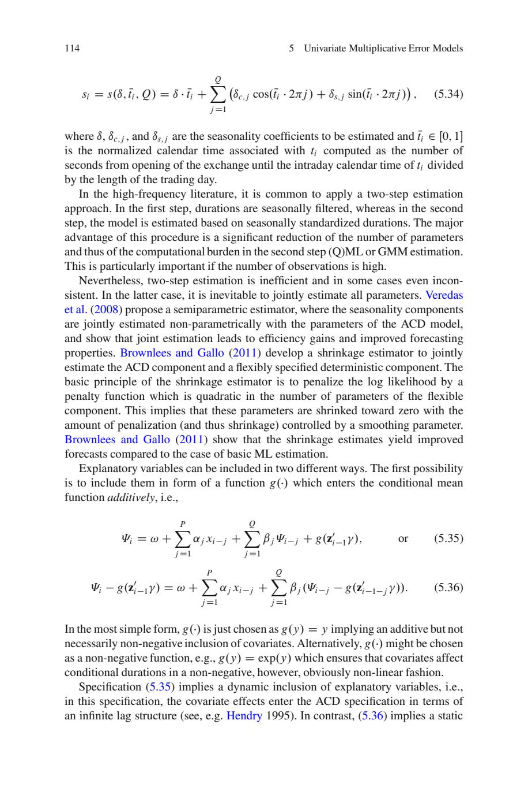</a><figcaption>PDF page 129 render</figcaption></figure>
<h3 id="pdf-page-130-printed-page-115">PDF page 130 / printed page 115<a class="heading-anchor" href="#pdf-page-130-printed-page-115" aria-label="この見出しへのリンク">#</a></h3>
<pre><code>5.5 The Log-ACD Model                                                                 115


inclusion of regressor effects. A priori it is unclear which specification should be
preferred in practice. However, in some cases, a dynamic inclusion according to
(5.35) makes the interpretation of estimates of  difficult. This is the case whenever
the regressors z are connected to certain time periods (for instance, to capture the
effect of a news event occurring at a fixed time). In such a case, (5.36), is preferred.
   Alternatively, explanatory variables might be included multiplicatively as an
additional scaling function. Then, define xM i as the duration standardized by both
seasonality and covariate effects. Thus
                                                  xi
                                   xM i WD                                         (5.37)
                                             si g.z0i 1  /

and i is given by

                                  i D M i si g.z0i 1  /:                       (5.38)


5.5 The Log-ACD Model

Bauwens and Giot (2000) and Lunde (2000) propose a logarithmic ACD model6
that ensures the non-negativity of durations without any parameter restrictions and
is obtained by xi D i &quot;i with

                      ln i D ! C ˛ ln &quot;i 1 C ˇ ln i 1 ;
                            D ! C ˛ ln xi 1 C .ˇ  ˛/ ln i 1 ;                  (5.39)

where &quot;i is i.i.d. with mean one. In order to distinguish the model from an alternative
logarithmic specification introduced below, we call the model in line with Bauwens
and Giot (2000) Logarithmic ACD model of type I (LACD1 ).
    In contrast to the linear ACD model, the LACD model implies a concave
relationship between &quot;i 1 and xi (the so-called news impact curve). I.e., the
difference in the impact of innovations with &quot;i &lt; 1 (“negative” surprises) on xi
is larger than in the case of innovations with &quot;i &gt; 1 (“positive” surprises).
    Similarly to the linear ACD model presented in the previous sections, in case
of innovation distributions with a mean non-equal to one, the process can be
represented as

                            xi D i &quot;Qi = DW ˚i &quot;Qi
                         ln ˚i D !Q C ˛ ln &quot;i 1 C ˇ ln ˚i 1 ;


6
 In some studies, this model is also called “Nelson type” ACD model since it resembles the
EGARCH specification proposed by Nelson (1991).</code></pre>
<figure class="page-render"><a href="../assets/page_renders/page-130.jpeg">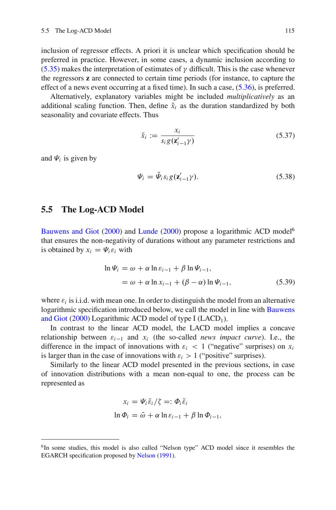</a><figcaption>PDF page 130 render</figcaption></figure>
<h3 id="pdf-page-131-printed-page-116">PDF page 131 / printed page 116<a class="heading-anchor" href="#pdf-page-131-printed-page-116" aria-label="この見出しへのリンク">#</a></h3>
<pre><code>116                                                          5 Univariate Multiplicative Error Models


where !Q WD ! C .ˇ  1/ ln and &quot;i WD &quot;Qi = with EŒQ&quot;i  WD ¤ 1.
   Similarly to the basic ACD model, the Log-ACD model can be also represented
by an ARMA specification. Allen et al. (2008) show that a Log-ACD model as given
by (5.39) can be represented as an ARMA(R,R) specification for ln xi ,

                                        X
                                        R                      X
                                                               R
                        ln xi D !M C           ıj ln xi j C          j i j C i ;          (5.40)
                                        j D1                   j D1

                                                         P
where i WD .ln &quot;i  EŒln &quot;i /  i id.0; 2 /, !M WD ! C Rj D1 j EŒln &quot;i  C EŒln &quot;i ,
and R WD max.P; Q/.
   Bauwens and Giot (2000) also propose an alternative Log-ACD specification
given by

                            ln i D ! C ˛&quot;i 1 C ˇ ln i 1
                                  D ! C ˛.xi 1 =i 1 / C ˇ ln i 1 ;                        (5.41)

which implies a convex news impact curve and is referred to as Log ACD type II
(LACD2 ) model. Both Log-ACD specifications can be compactly written as

                                        X
                                        P                       X
                                                                Q
                        ln i D ! C            ˛j g.&quot;i j / C          ˇj ln i j ;           (5.42)
                                        j D1                    j D1


where g.&quot;i / D ln &quot;i (type I) or g.&quot;i / D &quot;i (type II). Bauwens et al. (2008)
and Karanasos (2008) derive the unconditional moments for both Log ACD
specifications. In the case P D Q D 1, the mth moment of xi is given by
                                                 Y
                                                   1
                                             m!                ˚
                 EŒxim  D     m exp                       E exp m˛ˇ j 1 g.&quot;i /         ;     (5.43)
                                            1ˇ     j D1


where m is an arbitrary positive integer m and the conditions m D Ejxim j &lt; 1,
jˇj &lt; 1 and EŒexp.m˛ˇ j 1 g.&quot;i // &lt; 1 have to be satisfied.
   Correspondingly, under the conditions jˇj &lt; 1, EŒexp.2˛g.&quot;i // &lt; 1, the
autocorrelation function is given by
                  h               iQ           h j 1        iQ        h                        i
                          n1        n1                         1        ˛.1Cˇn /ˇ j 1 g.&quot;i /
                 E &quot;i e ˛ˇ g.&quot;i /    j D1 E e                    j D1 E e
                                                   ˛ˇ g.&quot;i /

      n D                                                            j 1        2
                         Q1         2˛ˇ j 1 g.&quot;i /  2
                                                           Q1
                           j D1 E e                           j D1 E e
                                                                       ˛ˇ    g.&quot;i /
                       2

                                        Q1         h j 1        i2
                                    2
                                            j D1 E  e ˛ˇ  g.&quot;i /

                                                                   j 1        2 :         (5.44)
                       Q1        2˛ˇj 1 g.&quot;i / 
                                                           Q1
                        j D1 E e                                  E
                                                      2              e ˛ˇ  g.&quot;i /
                   2                                         j D1</code></pre>
<figure class="page-render"><a href="../assets/page_renders/page-131.jpeg">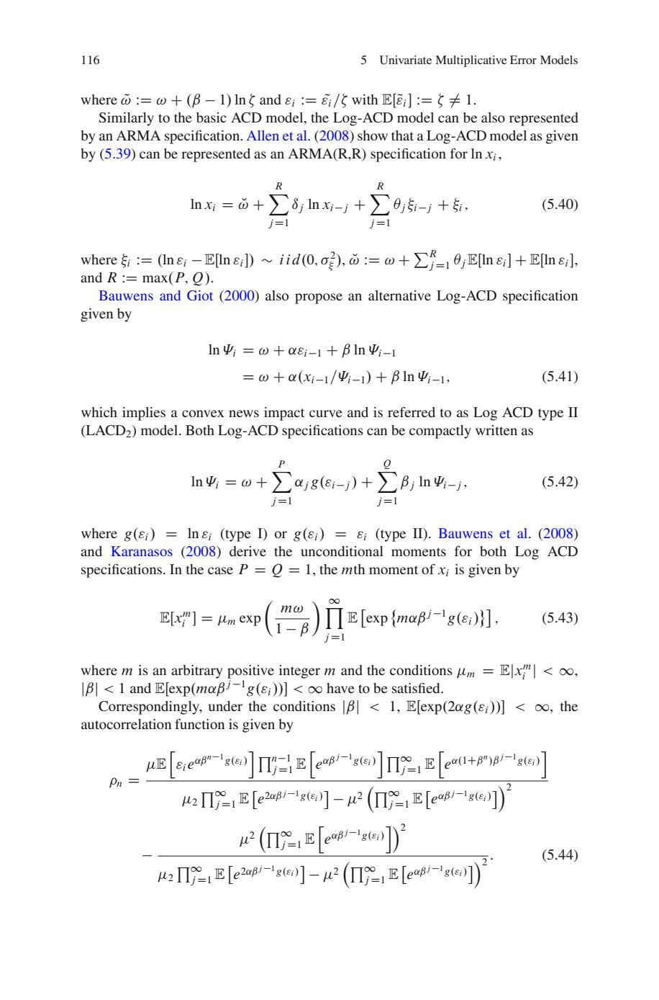</a><figcaption>PDF page 131 render</figcaption></figure>
<h3 id="pdf-page-132-printed-page-117">PDF page 132 / printed page 117<a class="heading-anchor" href="#pdf-page-132-printed-page-117" aria-label="この見出しへのリンク">#</a></h3>
<pre><code>5.6 Testing the ACD Model                                                           117


From these results it follows that the LACD model is covariance stationary if

            ˇ &lt; 1;    EŒ&quot;i expf˛g.&quot;i /g &lt; 1;       EŒexpf2˛g.&quot;i /g &lt; 1:

Generalizations of these results are given in Bauwens et al. (2008) and Karanasos
(2008). In practice, it is suggested to truncate the infinite sums after a sufficiently
large number.
    As pointed out by Allen et al. (2008), the Exponential QML properties of the
linear ACD model cannot be straightforwardly carried over to the Log-ACD case.
Loosely speaking, the underlying reason is that in the Log-ACD case, the innovation
&quot;i 1 affects i and xi in a nonlinear way which perishes the validity of the QML
score function in case of distributional misspecification. This is similar to the result
that the QML property of the Gaussian GARCH model cannot be carried over to
Nelson’s (1991) Exponential GARCH.
    As an alternative, Allen et al. (2008) propose estimating the LACD model using
the log-normal distribution. Assuming ln xi to be normally distributed with mean
i and variance 2 , the corresponding log likelihood function is given by

                      1      1                            1 .ln xi  ln i /2
        ln L.XI / D  ln 2  ln          2
                                               ln xi              2
                                                                              :   (5.45)
                      2      2                            2

                                                                           O
Then, Allen et al. (2008) show the consistency and asymptotic normality of ,

                  p             d
                   n.O   0 / ! N .0; A. 0 /1 B. 0 /A. 0 /1 /;             (5.46)

where
                         ˇ                                       ˇ
                     1  ˇ                        1 @2 ln L.XI / ˇˇ
  A. 0 / D lim n EŒH./ˇ            D lim n E                     ˇ       ;     (5.47)
             n!1               D 0   n!1               @@ 0       D 0
                                   ˇ
   B. 0 / D lim n1 E s./s./0 ˇD 0
            n!1
                                                 ˇ
                  1     @ ln L.XI / @ ln L.XI / ˇˇ
           D lim n E                                ˇ      :                      (5.48)
            n!1               @           @ 0      D 0

An important advantage of the LACD model is that i is straightforwardly extended
by covariates without violating the non-negativity restrictions. In this context, the
discussion of Sect. 5.4 applies.


5.6 Testing the ACD Model

In this section, we show several procedures to test the ACD model. Section 5.6.1
illustrates Portmanteau tests for ACD residuals. Here, we discuss the classical
Box–Pierce and Ljung–Box tests as well as refinements thereof accounting for</code></pre>
<figure class="page-render"><a href="../assets/page_renders/page-132.jpeg">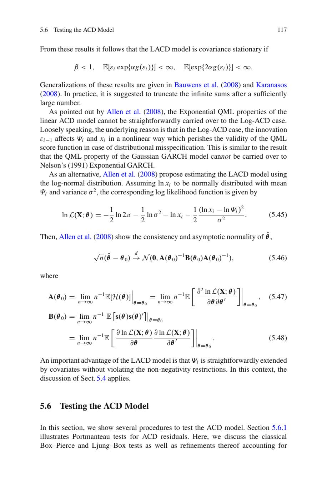</a><figcaption>PDF page 132 render</figcaption></figure>
<h3 id="pdf-page-133-printed-page-118">PDF page 133 / printed page 118<a class="heading-anchor" href="#pdf-page-133-printed-page-118" aria-label="この見出しへのリンク">#</a></h3>
<pre><code>118                                                   5 Univariate Multiplicative Error Models


the peculiar features of ACD residuals. Section 5.6.2 discusses independence tests,
such as the BDS tests proposed by Brock et al. (1996) as well as Hong and Lee’s
(2003) omnibus test based on generalized spectral densities. In Sect. 5.6.3, we focus
on explicit tests on the distribution of ACD residuals. Besides density evaluations
using Rosenblatt’s (1952) probability integral transformations, we focus on non-
parametric tests against distributional misspecification as proposed by Fernandes
and Grammig (2005) based on Aı̈t-Sahalia (1996). Section 5.6.4 concentrates on
Lagrange Multiplier (LM) tests on correct functional form of the conditional mean
specification. These tests have optimal power against local alternatives but only low
power against more general alternatives. Therefore, Sect. 5.6.5 discusses conditional
moment (CM) tests as originally introduced by Newey (1985). These tests are
consistent against a finite number of possible alternatives since they rely on a finite
number of conditional moment restrictions. In Sect. 5.6.5.2 we illustrate the use
of integrated conditional moment (ICM) tests proposed by Bierens (1982, 1990).
By employing an infinite number of conditional moments, this test possesses the
property of consistency against all possible alternatives, and thus, is a generalization
of the CM test. Finally, in Sect. 5.6.6, we present a Monte Carlo study where we
analyze the size and the power of different forms of LM, CM and ICM tests on the
basis of various types of augmented ACD models as data generating processes.


5.6.1 Portmanteau Tests

One obvious way to evaluate the goodness-of-fit of the ACD model is to investigate
the dynamic and distributional properties of the ACD residuals

                         ei WD &quot;O i D xi =O i ;     i D 1; : : : ; n:                 (5.49)

Under correct model specification, the series must be i.i.d. Hence, Portmanteau
statistics as proposed by Box and Pierce (1970) and Ljung and Box (1978) based
on the ACD residuals can be used to analyze whether the specification is able to
account for the inter-temporal dependence in the duration process. In particular, if
the residuals ei are i.i.d., the Box–Pierce statistic is given by

                                             X
                                             k
                                                        a
                            QBP .k/ D n             Oj2  2ks ;                     (5.50)
                                             j D1


where s denotes the number of autoregressive parameters to be estimated underlying
ei , i.e. s WD maxfP; Qg in case of an ACD model, and Oj denotes the j th lag sample
autocorrelation
                                  Pnj
                                   i D1 .ei  e/.e
                                               N i Cj  e/
                                                         N
                          Oj D       Pn                   ;                           (5.51)
                                         i D1 .ei  e/
                                                    N  2</code></pre>
<figure class="page-render"><a href="../assets/page_renders/page-133.jpeg">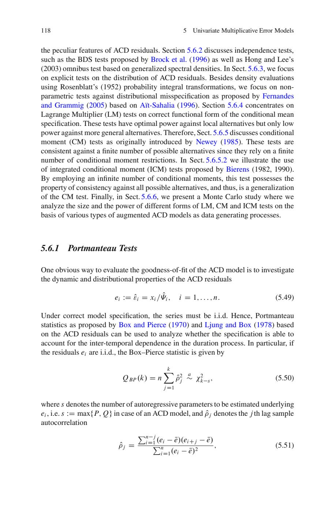</a><figcaption>PDF page 133 render</figcaption></figure>
<h3 id="pdf-page-134-printed-page-119">PDF page 134 / printed page 119<a class="heading-anchor" href="#pdf-page-134-printed-page-119" aria-label="この見出しへのリンク">#</a></h3>
<pre><code>5.6 Testing the ACD Model                                                                           119


where eN is the mean of ei which equals one under correct specification. To improve
the poor finite sample properties of the Box–Pierce test when the sample size ranges
from small to moderate, Ljung and Box (1978) suggest using the statistic

                                                         X
                                                         k
                                                           Oj2           a
                        QLB .k/ D n.n C 2/                                 2ks :               (5.52)
                                                         j D1
                                                              nj

Both the Box–Pierce and Ljung–Box test statistics rely on the result that if the
underlying series is normally distributed with a (true) mean zero, the asymptotic
distribution of j is normal with mean zero and variance .n  j /=.n.n C 2// where
the latter expression is approximated by n1 if n is large.
   Various studies analyze the effects of an unknown, possibly non-zero mean
and deviations from normality. Dufour and Roy (1985) show that in case of an
unknown mean, the finite sample performance of QLB can be improved if j is
not standardized by .n  j /=.n.n C 2// but by its exact first and second moments.
Kwan et al. (2005) illustrate that the standard Box–Pierce and Ljung–Box tests
can be clearly undersized if the underlying data generating process is skewed.
In such a situation, a non-parametric Portmanteau test as proposed by Dufour
and Roy (1986) relying on rank autocorrelations provides a better performance in
finite samples. Further modifications of Portmanteau statistics based on variance-
stabilizing transformations have been proposed by Kwan and Sim, (1996a,b).
   As stressed by Pacurar (2008), the asymptotic 2 distributions which are derived
for Box–Pierce or Ljung–Box tests based on residuals arising from an ARMA
model cannot be directly carried over to ACD residuals. In fact, for the case of
an p
   Exponential ACD model, Li and Yu (2003) show that the asymptotic distribution
of nO with O WD .O1 ; : : : ; Ok /0 and
                                       Pnj
                                            .ei  1/.ei Cj  1/
                                  Oj D i D1Pn                  ;
                                             i D1 .ei  1/
                                                           2


                        Pn              p
                         i D1 .ei  1/ ! 1)
                                      2
or, alternatively (as

                                              X
                                              nj
                                      Oj D       .ei  1/.ei Cj  1/;                            (5.53)
                                              i D1

                                                                  1 0
                                                       1 Ik  ZH Z with Ik
is multivariate normal with mean zero and covariance matrix
denoting
   P      the k-dimensional identity matrix, H WD E n H./ , ln L.XI / D
 niD1 .ln i C xii / and
            2 1 Pn                                       Pn                             3
                    i D2  2 .ei 1  1/                                  .ei 1  1/
                         xi                          1           xi xi 1
                n                                    n    i D2      i2
           6                 i
                                 ::                                  ::                 7
      Z WD 6
           4                      :                                   :
                                                                                        7
                                                                                        5     :   (5.54)
               1 Pn                      1 Pn
                  i DkC1  2 .ei k  1/ n  i DkC1  2 .ei k  1/
                         xi                       xi xi 1
               n          i                           i                                 k2</code></pre>
<figure class="page-render"><a href="../assets/page_renders/page-134.jpeg">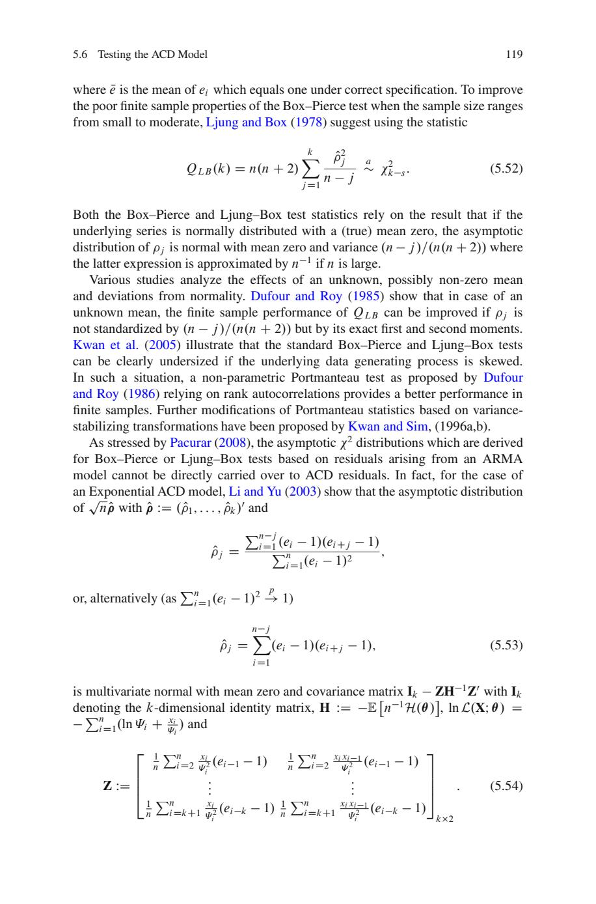</a><figcaption>PDF page 134 render</figcaption></figure>
<h3 id="pdf-page-135-printed-page-120">PDF page 135 / printed page 120<a class="heading-anchor" href="#pdf-page-135-printed-page-120" aria-label="この見出しへのリンク">#</a></h3>
<pre><code>120                                                            5 Univariate Multiplicative Error Models


Then, the statistic is

                         QLY .k/ D nO 0 .Ik  ZH1 Z0 /1 O  2k :
                                                                            a
                                                                                                (5.55)

This result explicitly holds for the case of an underlying exponential distribution
but can be easily generalized, e.g., to the case of a Weibull distribution. A similar
finding has been shown by Li and Mak (1994) for Portmanteau tests for squared
standardized residuals in a GARCH model.
    Hence, Box–Pierce and Ljung–Box tests can be still used as approximative
tests indicating the model’s dynamic fit to perform (relative) model comparisons.
However, whenever one is interested in possibly exact inference on the dynamic
properties of ACD residuals, modified Portmanteau tests as discussed above should
be used.
    Note that the independence of ei is tested only based on the first k autocorre-
lations implying testing against the specific alternative hypothesis H1 W j ¤ 0
for 1  j  k. However, Box–Pierce and Ljung–Box tests are straightforwardly
applicable to test not only for correlations but also for dependencies in higher
order moments, e.g., in squared ACD residuals. An application of the Ljung–Box
test based on squared residuals was proposed by McLeod and Li (1983) and is
commonly referred to as McLeod–Li test.


5.6.2 Independence Tests

While the Portmanteau tests discussed above can only detect autocorrelations in
the employed series but do not automatically detect dependencies in higher order
moments, they are not applicable to explicitly test for the independence of ACD
residuals. Brock et al. (1996) propose a nonparametric test which has power against
many alternatives to i.i.d. processes, including chaotic effects. The major idea is to
evaluate the “nearness” of m-period histories of residuals. In particular, define
                                                   (
                                                       1    ifjei  ej j &lt; d;
                           1l .ei ; ej ; d / WD                                                 (5.56)
                                                       0    otherwise,

and

                                                   Y
                                                   m1
                          1l m .ei ; ej ; d / WD           1l .ei Ck ; ej Ck ; d /;             (5.57)
                                                   kD0


where d is some distance. Hence, 1l m ./ is one whenever the two m-period histories
fei ; ei C1 ; : : : ; ei Cm1 g and fej ; ej C1 ; : : : ; ej Cm1 g are near each other in the sense
that for each term, jei Ck  ej Ck j &lt; d . The proportion of m-period histories that are</code></pre>
<figure class="page-render"><a href="../assets/page_renders/page-135.jpeg">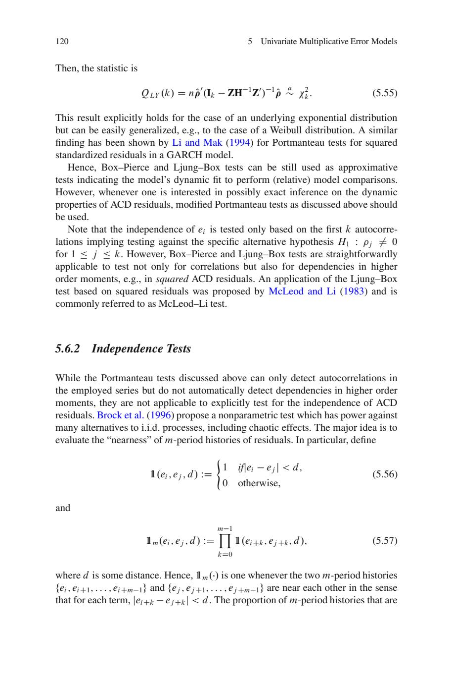</a><figcaption>PDF page 135 render</figcaption></figure>
<h3 id="pdf-page-136-printed-page-121">PDF page 136 / printed page 121<a class="heading-anchor" href="#pdf-page-136-printed-page-121" aria-label="この見出しへのリンク">#</a></h3>
<pre><code>5.6 Testing the ACD Model                                                                121


near each other is estimated by the correlation integral

                                 2          X nmC1
                                            nm X
         Cm .n; d / WD                              1l m .xi ; xj ; d /                (5.58)
                         .n  m/.n  m C 1/
                                                i D1 j Di C1


with limit

                                Cm .d / WD plim Cm .n; d /:
                                           n!1


If the observations are i.i.d., then Cm .d / D C1 .d /m : Conversely, if the observations
are from a chaotic process, then Cm .d / &gt; C1 .d /m : Exploiting the asymptotic
distribution of the correlation integral, Brock et al. (1996) construct a test statistic
as
                                   p Cm .d /  C1 .d /m d
                 BDS.m; d / WD      n                   ! N .0; 1/;                    (5.59)
                                            VOm
                                              1=2


                p
              O nfCm .n; d /C1 .n; d /m g denotes the asymptotic variance which
where VOm WD VŒ
can be estimated by
             0                                                                  1
                                                               X
                                                               m1
     VOm D 4 @K m C .m  1/2 C 2m  m2 KC 2m2 C 2                    K mj C 2j A ;   (5.60)
                                                               j D1


where C WD C1 .n; d / and

                                      6
              K WD
                     .n  m  1/.n  m/.n  m C 1/
                          02                     3&quot;                      #1
                      X
                      nm    i 1
                             X                       X
                                                    nmC1
                         @4      1l m .ej ; ei /5        1l m .ei ; ek / A :
                         i D1   j D1                kDi C1


The
p BDS test has the property to be nuisance-parameter-free in the sense that any
   n-consistent parameter estimator has no impact on its null limit distribution under
a class of conditional mean models. However, as stressed by Hong and Lee (2003),
the BDS test requires choosing the parameters m and d . In finite samples, this choice
might affect the power and size properties of the test. Moreover, it is shown that the
BDS test is not an omnibus test in the sense that it has power against any possible
alternative.
    As an alternative, Hong and Lee (2003) propose a misspecification test for ACD
models based on the generalized spectrum test introduced by Hong (1999). It is
based on the covariance between empirical characteristic functions of ei and ei j
given by</code></pre>
<figure class="page-render"><a href="../assets/page_renders/page-136.jpeg">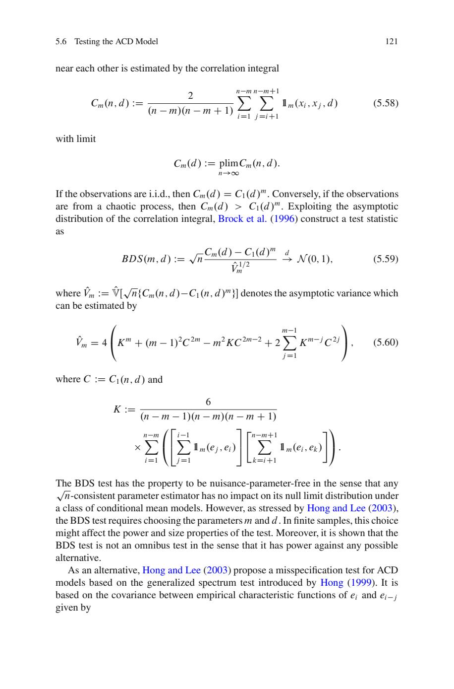</a><figcaption>PDF page 136 render</figcaption></figure>
<h3 id="pdf-page-137-printed-page-122">PDF page 137 / printed page 122<a class="heading-anchor" href="#pdf-page-137-printed-page-122" aria-label="この見出しへのリンク">#</a></h3>
<pre><code>122                                                   5 Univariate Multiplicative Error Models


                               j .u; v/ WD CovŒe
                                                   uei
                                                          ; e vei j ;               (5.61)
               p
where  WD       1 and j D 0; ˙1; : : : Then, j .u; v/ D &#x27;j .u; v/  &#x27;.u/&#x27;.v/,
where &#x27;j .u; v/ WD EŒe .uei Cvei j /  and &#x27;.u/ WD EŒe uei  are the joint and marginal
characteristic functions of .ei ; ei j /. Consequently, j .u; v/ D 0 for all .u; v/ 2 R2
if ei and ej are independent. The Fourier transform of j .u; v/ is given by

                                    1
                                1 X              j w
               f .w; u; v/ D           j .u; v/e       ;              w 2 Π; :      (5.62)
                               2 j D1

As the negative partial derivative of f .w; u; v/ with respect to .u; v/ at .0; 0/ yields
the “conventional” spectral density, Hong (1999) refers it to as a “generalized
spectral density” of fei g. It can capture any type of pairwise dependence across
various lags in fei g. If fei g is i.i.d., f .w; u; v/ becomes a flat spectrum

                                                 1
                               f0 .w; u; v/ D             0 .u; v/:                    (5.63)
                                                2

Hong and Lee (2003) suggest estimating f .w; u; v/ using a kernel estimator,

                       1 X
                          n1
      fOn .w; u; v/ D         .1  jj j=n/1=2 K.j=pn / O j .u; v/e j w ;
                      2 j D1n

          O j .u; v/ D &#x27;O j .u; v/  &#x27;Oj .u; 0/&#x27;O j .0; v/; j D 0; ˙1; : : : ; ˙.n  1/;
                       (               P
                          .n  j /1 niD1Cj e .uei Cvei j / if j  0;
         &#x27;Oj .u; v/ D                  P                                                (5.64)
                          .n C j /1 niD1j e .uei Cj Cvei / if j &lt; 0;

where K W R ! Œ1; 1 is a symmetric kernel with bandwidth bn such that bn ! 1,
bn =n ! 0 as n ! 1, and .1  jj j=n/1=2 is a finite-sample adjustment factor.
Correspondingly, f0 .w; u; v/ is estimated by

                                                1
                               fO0 .w; u; v/ D    O 0 .u; v/:                          (5.65)
                                               2

Hong and Lee (2003) propose a test statistic by comparing fOn .w; u; v/ and
fO0 .w; u; v/ via an L2 -norm, see Hong and Lee (2003) for details. For the choice of
the kernel, Hong and Lee suggest using the Daniell kernel as optimal to maximize
the asymptotic power of the test. However, as stressed by Meitz and Teräsvirta
(2006), its computation is demanding since it has an unbounded support. This is
particularly true if the underlying sample size is huge. Therefore, as an alternative,
Meitz and Teräsvirta (2006) propose using a Parzen kernel.
     Note that both the BDS test as well as the Hong and Lee (2003) test are not
applicable to exclusively test the conditional mean function of ACD models. As</code></pre>
<figure class="page-render"><a href="../assets/page_renders/page-137.jpeg">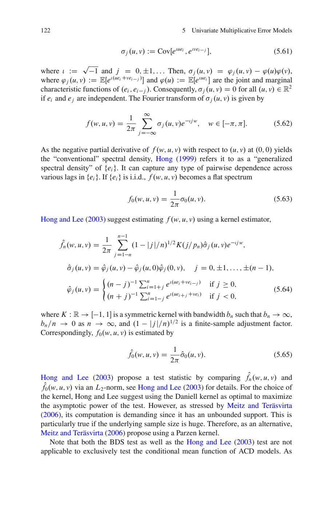</a><figcaption>PDF page 137 render</figcaption></figure>
<h3 id="pdf-page-138-printed-page-123">PDF page 138 / printed page 123<a class="heading-anchor" href="#pdf-page-138-printed-page-123" aria-label="この見出しへのリンク">#</a></h3>
<pre><code>5.6 Testing the ACD Model                                                                 123


correct specifications of the mean function do not necessarily rule out higher order
dependence, both tests would indicate a rejection of the ACD mean specification
though it may be correct. For such situations, Hong and Lee (2011) construct a test
on the dynamics in the conditional mean function based on a partial derivative of the
generalized spectrum. They show that the test can detect a wide class of neglected
linear and nonlinear dynamic structures in conditionally expected durations. Duch-
esne and Pacurar (2008) propose a test based on a kernel spectral density estimator
of ACD residuals yielding a generalized version of Hong’s (1996) test.


5.6.3 Distribution Tests

The residual series fei g should have a mean of one and a distribution which
should correspond to the specified distribution of the ACD errors. Hence, graphical
checks of the residual series can be performed based on quantile-quantile plots
(QQ plots). Alternatively, moment conditions implied by the specific distributions
might be investigated to evaluate the goodness-of-fit. In the case of an exponential
distribution, a simple moment condition implies the equality of the mean and the
standard pdeviation. As discussed in Chap. 4, Engle and Russell (1998) propose the
statistic n.. O e2  1/= &quot; / to test for excess dispersion, where O e2 is the
                                                                            p sample
variance of ei and &quot; is the standard deviation of .&quot;i  1/2 which equals 8 under
the exponential null hypothesis. Under the null, this test statistic is asymptotically
standard normally distributed.
   Another way to evaluate the goodness-of-fit is to evaluate the in-sample density
forecasts implied by the model. Diebold et al. (1998) propose an evaluation method
based on Rosenblatt’s (1952) probability integral transform
                                           Z xi
                                   qi WD          f .s/ds:                             (5.66)
                                            1

They show that under the null hypothesis, i.e., correct model specification, the
distribution of the qi series is i.i.d. uniform. Hence, testing the qi series against
the uniform distribution allows to evaluate the performance of density forecasts.7
In this context, Pearson’s goodness-of-fit test might be performed by categorizing
the probability integral transforms qi and computing a 2 -statistic based on the
frequencies of the individual categories,

                                X
                                M
                                  .nm  npO  /2      a
                                             
                                                  m
                                                       2M ;
                                mD1
                                          npOm


7
  For more details, see e.g., Bauwens et al. (2004) or Dufour and Engle (2000), who apply this
concept to the comparison of alternative financial duration models.</code></pre>
<figure class="page-render"><a href="../assets/page_renders/page-138.jpeg">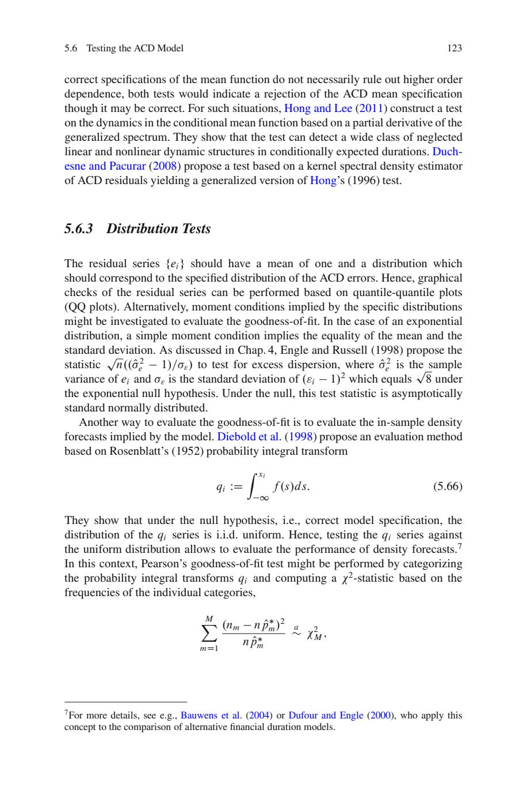</a><figcaption>PDF page 138 render</figcaption></figure>
<h3 id="pdf-page-139-printed-page-124">PDF page 139 / printed page 124<a class="heading-anchor" href="#pdf-page-139-printed-page-124" aria-label="この見出しへのリンク">#</a></h3>
<pre><code>124                                                5 Univariate Multiplicative Error Models


where M denotes the number of categories, nm the number of observations in
                     
category m and pOm      the estimated probability to observe a realization of qi in
category m.
   More sophisticated tests against distributional misspecification are proposed by
Fernandes and Grammig (2005) based on the work of Aı̈t-Sahalia (1996). They
suggest a nonparametric testing procedure that is based on the distance between the
estimated parametric density function and its non-parametric estimate. This test is
very general, since it tests for correctness of the complete (conditional) density.
   In the following we illustrate the concept to test the distribution of ACD
residuals which are consistent estimates of &quot;i as long as the conditional mean
function i is correctly specified. Fernandes and Grammig (2005) show  p that there
are no asymptotic costs in substituting the true errors &quot;i by their n-consistent
estimates ei . Define the c.d.f. and p.d.f. of the ACD residuals ei as F .e; /
and f .e; /, respectively, with  denoting the underlying parameter vector. The
principle of the test proposed by Fernandes and Grammig (2005) is to test whether
there is any value  0 of the parameter vector such that the true and parametric
density functions of ei coincide almost everywhere. Consider the null hypothesis

                    H0 W 9  0 2  such that f .e;  0 / D f .e/;

where  denotes the underlying parameter space. The so-called D-test is based on
the distance
                          Z
                  f WD 1l fe2Sg ff .e; /  f .e/g2 dF .e/;              (5.67)
                              e

where the integral is over the support of f and S defines the subset of regions
in which non-parametric (kernel) density estimation is stable. Then, the sample
counterpart of (5.67) is given by

                             1X
                                  n
                     fO D                              O  fO.ei /g2 ;
                                    1l fei 2Sg ff .ei ; /                          (5.68)
                             n i D1

where O and fO denote pointwise consistent estimates of  0 and f , respectively.
Hence, fO evaluates the difference between the parametric and nonparametric
estimates of the density function f . As the parametric estimate is consistent only
under correct specification, fO converges to zero under the null.
   To construct a formal test, consider a kernel density estimate fO.e/ of f .e/ given
by

                                      1 X
                                           n
                             fO.e/ D          Ke;bn .ei /;                          (5.69)
                                     nbn i D1</code></pre>
<figure class="page-render"><a href="../assets/page_renders/page-139.jpeg">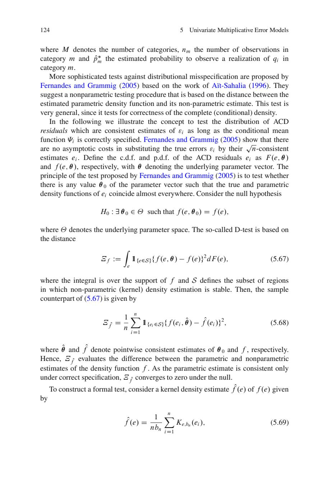</a><figcaption>PDF page 139 render</figcaption></figure>
<h3 id="pdf-page-140-printed-page-125">PDF page 140 / printed page 125<a class="heading-anchor" href="#pdf-page-140-printed-page-125" aria-label="この見出しへのリンク">#</a></h3>
<pre><code>5.6 Testing the ACD Model                                                              125


whereR K.ei / WD Ke;bn .ei / is a continuously differentiable kernel function K./  0
with K.u/d u D 1 and bandwidth bn . In case of using a fixed kernel, Fernandes
and Grammig (2005) propose a test statistic for fO of the form

                                                    1=2           1=2 O
                                               nbn fO  bn           ıD
                                 OnD D                                     ;         (5.70)
                                                             OD

where bn D o.n1=.2sC1/ / denotes the bandwidth of the fixed kernel and s is
the order of the kernel. Moreover, ıOD and O D2 are consistent estimates of ıD WD
IK EŒ1l fe2Sg f .e/ and D2 WD JK EŒ1l fe2Sg f 3 .e/, where IK and JK depend on the
form of the (fixed) kernel and are defined by
                                   Z
                       IK WD               K 2 .u/d u;
                                       u
                                   Z Z                                 2
                       JK WD                       K.u/K.u C /d u             d:
                                       u       u


The parameters ıD and D2 can be consistently estimated using the empirical
distribution to compute the expectation and then plugging in the corresponding
(fixed) kernel density estimate:

                                         1X
                                             n
                                ıOD D IK        1l fei 2Sg fO.ei /;
                                         n i D1

                                                   1X
                                                         n
                                O D2 D JK             1l fei 2Sg fO.ei /3 :
                                                   n
                                                     i D1

In case of the optimal uniform kernel according to Gosh and Huang (1991) given by
                                  p        (      p
                               .2 3/1 ; for juj  3;
                       K .u/ D
                            u
                                                  p                                  (5.71)
                               0;        for juj &gt; 3;
                                                         
f is estimated by substituting Ke;bn .ei / D K u eebn
                                                       i
                                                           in (5.69), and IK and JK are
                    p 1                p 1
given by IK D .2 3/ and JK D .3 3/ .
   Under a set of regularity conditions (see Fernandes and Grammig 2005), the
statistic OnD is asymptotically normally distributed,

                                                     d
                                            OnD ! N .0; 1/:

   However, as the ACD residuals have a support which is bounded from below,
the test statistic OnD may perform poorly due to the well-known boundary bias</code></pre>
<figure class="page-render"><a href="../assets/page_renders/page-140.jpeg">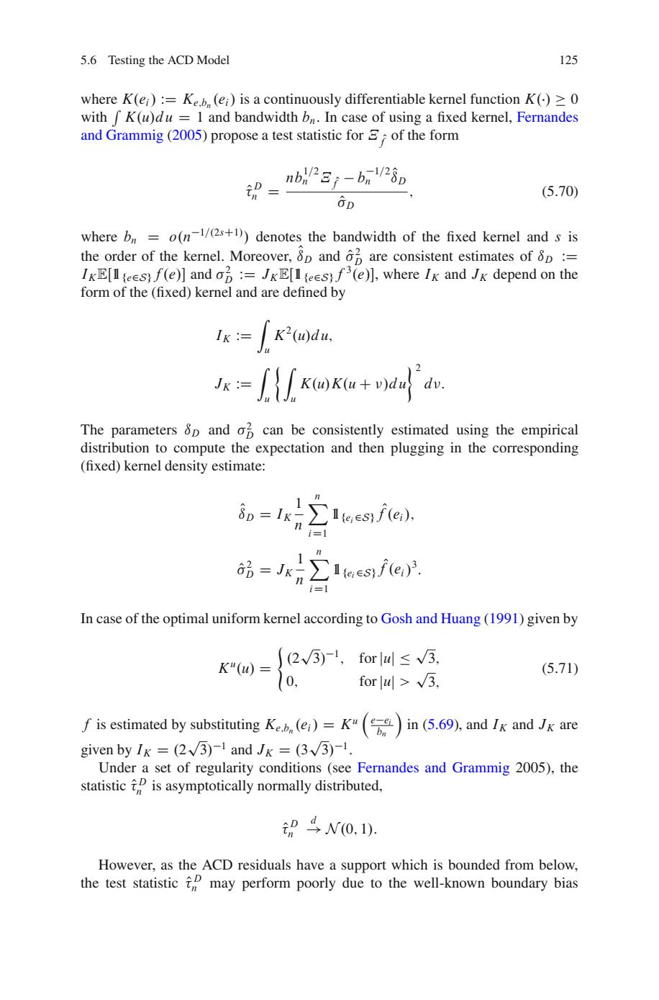</a><figcaption>PDF page 140 render</figcaption></figure>
<h3 id="pdf-page-141-printed-page-126">PDF page 141 / printed page 126<a class="heading-anchor" href="#pdf-page-141-printed-page-126" aria-label="この見出しへのリンク">#</a></h3>
<pre><code>126                                                       5 Univariate Multiplicative Error Models


induced by fixed kernels. This problem is caused by the fact that a fixed kernel
assigns weight outside the support of the density when smoothing occurs near the
boundary. An alternative is to consider asymmetric kernels such as the flexible
gamma kernel proposed by Chen (2000). This kernel is based on the density of the
gamma distribution with shape parameter x=bn C 1 and the bandwidth bn serving
as scale parameter. It is given by

                                           ux=bn exp.u=bn /
                   Kx=bn C1;bn .u/ WD       x=bn C1
                                                                          1l fu0g ;            (5.72)
                                           bn          .x=bn C 1/

where bn D o.n4=9 /. Then, the corresponding gamma kernel density estimate is
given by

                                     1 X 
                                          n
                            fQ.e/ D         K           .ei /:                                  (5.73)
                                    nbn i D1 e=bn C1;bn

Since the support of these kernels is the positive real line, they never assign weight
outside the support of the underlying density. In addition to being free of boundary
bias, the kernel shape changes according to the position of the observations, which
modifies the amount of smoothing.
   Using the gamma kernel as underlying kernel estimator, Fernandes and Grammig
(2005) propose a modified test statistic of the form

                                     1=4           1=4 Q
                                  nbn fO  bn         ıG        d
                         QnD WD                                  ! N .0; 1/;                    (5.74)
                                            QG

where ıQG and Q G2 are consistent estimates of ıG WD 2p1 EŒ1l fe2Sg e 1=2 f .e/ and
 G WD
 2    p1
       2
           EŒ1l fe2Sg e 1=2 f 3 .e/. Similarly to above, ıG and                 2
                                                                                  G can be consistently
estimated by

                                     X n
                          QıG D p1        1l fei 2Sg ei fQ.ei /;
                                                      1=2
                               2   n i D1

                                     1     X
                                           n
                                                                     fQ.ei /3 :
                                                             1=2
                          Q G2 D p               1l fei 2Sg ei
                                     2 n i D1

To choose the bandwidth bn , Fernandes and Grammig (2005) adapt Silverman’s
(1986) rule of thumb and choose

                                   1 O                O 4=5 n4=9 ;
                         bn D          .=4/1=5 .2  /
                                  ln n</code></pre>
<figure class="page-render"><a href="../assets/page_renders/page-141.jpeg">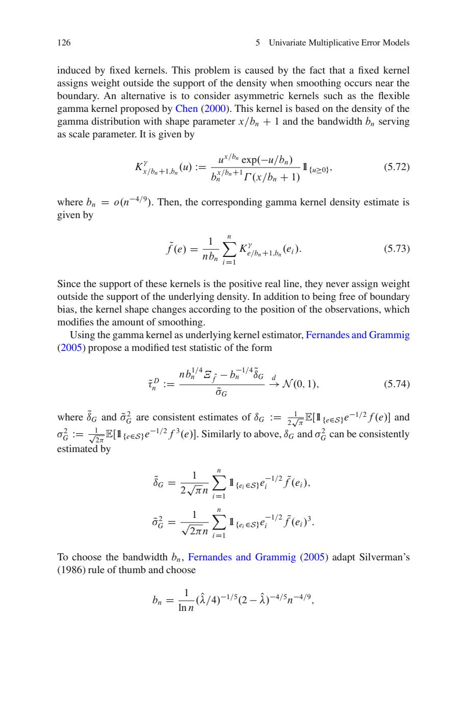</a><figcaption>PDF page 141 render</figcaption></figure>
<h3 id="pdf-page-142-printed-page-127">PDF page 142 / printed page 127<a class="heading-anchor" href="#pdf-page-142-printed-page-127" aria-label="この見出しへのリンク">#</a></h3>
<pre><code>5.6 Testing the ACD Model                                                         127


where O is a consistent estimate of the parameter  of an exponential distribution
which is straightforwardly estimated by the sample mean of the ACD residuals or
just set to one.
    In a similar fashion, Fernandes and Grammig (2005) propose also a so-called
H-test based on the distance between parametric and nonparametric estimates of the
hazard function. See Fernandes and Grammig (2005) for more details.
    The appealing features of the gamma kernel, such as the reduced variance in
the interior part of the support, come at a cost. Compared to symmetric kernels,
the gamma kernel estimator features a somewhat higher bias when moving away
from the boundary (see, e.g., Hagmann and Scaillet 2007). That property makes
it necessary to implement an effective technique for bias correction. A simple
technique for multiplicative bias correction for fixed kernels is suggested by
Hjort and Glad (1995) and extended to asymmetric kernels by Hagmann and
Scaillet (2007) as a special case of local bias correction methods. This approach
is semiparametric in the sense that the density is being estimated nonparametrically
while using a parametric start. Hautsch et al. (2010) employ these techniques to
construct a generalization of the Fernandes and Grammig (2005) test which allows
to test against discrete-continuous mixture distributions explicitly accounting also
for zero observations.


5.6.4 Lagrange Multiplier Tests

Note that the tests discussed in the previous sections are not appropriate for
explicitly testing the conditional mean restriction of ACD models. Clearly, these
tests have power against misspecifications of the conditional mean function, but
they do not allow to identify whether a possible rejection is due to a violation of
distributional assumptions caused by misspecifications of higher order conditional
moments or due to a violation of the conditional mean restriction. Especially in
the context of QML estimation of the ACD model, one is mainly interested in
the validity of the conditional mean restriction but not necessarily in the correct
specification of the complete density. Moreover, the distribution tests illustrated in
Sect. 5.6.3 built on consistent estimates of the ACD errors, which require a correct
specification of the conditional mean function. Procedures that explicitly test this
particular conditional moment restriction are discussed in the following subsections.
   In the econometric literature, the Lagrange Multiplier test has proven to be a
useful diagnostic tool to detect model misspecifications. See for example, Breusch
(1978), Breusch and Pagan (1979, 1980), Godfrey (1978a,b), or Engle (1984). In
case of QML estimation of the ACD model (see Sect. 5.3.1), the LM test statistic is
computed as

                              LM D f00 z0 .z00 z0 /1 z00 f0 ;                 (5.75)</code></pre>
<figure class="page-render"><a href="../assets/page_renders/page-142.jpeg">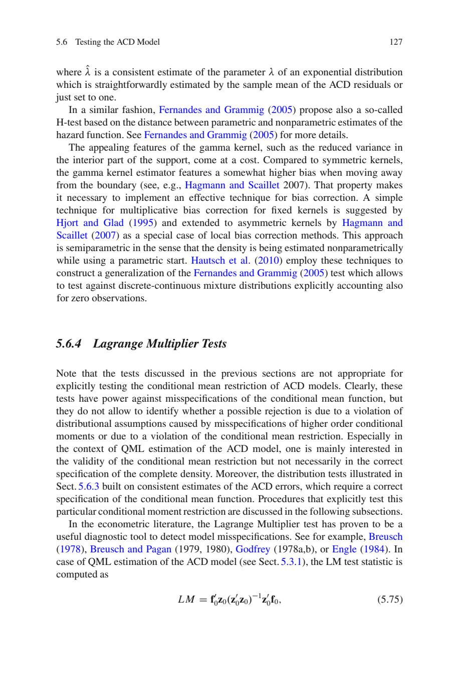</a><figcaption>PDF page 142 render</figcaption></figure>
<h3 id="pdf-page-143-printed-page-128">PDF page 143 / printed page 128<a class="heading-anchor" href="#pdf-page-143-printed-page-128" aria-label="この見出しへのリンク">#</a></h3>
<pre><code>128                                                      5 Univariate Multiplicative Error Models


where
                                        0                                             0
                    x1              xn                           1 @1         1 @n
        f0 WD           1; : : : ;    1 ;          z0 WD               ;:::;                ;
                    1              n                           1 @ 0       n @ 0

both evaluated under the null. It is easy to show that this test statistic corresponds to
the uncentered R2 from a regression of f0 on z0 and is commonly computed as nR2
where R2 is the uncentered R2 from a regression of a vector of ones on the scores
of the model.
   To perform the LM test, it is necessary to specify a general model which
encompasses the model under the null. Consider a more general form of LM test
which allows to test for misspecifications of the conditional mean function of
unknown form. Assume that the ACD specification under the null is a special case
of a more general (additive) model of the form

                                      i D i0 C  0a zai ;                                       (5.76)

where i0 denotes the conditional mean function under the null depending on the
parameter vector  0 , while  a and zai denote the vectors of additional parameters
and missing variables, respectively. Then, we can test for the correct specification
of the null model by testing the parameter restriction  a D 0. Following the
idea of Engle and Ng (1993), zai might be specified in terms of so-called sign
bias variables 1l f&quot;i 1 &lt;1g , 1l f&quot;i 1 &lt;1g &quot;i 1 and 1l f&quot;i 1 1g &quot;i 1 , and extensions thereof.
Such specifications allow to investigate whether the specification is appropriate to
capture possible nonlinearities in the news impact function. The resulting LM test
is formulated based on the auxiliary regression

                                  ei D z00i Q̌ 0 C z0ai Q̌ a C ui ;                               (5.77)

where ui is a zero mean i.i.d. error term, Q̌ 0 and Q̌ a are vectors of regression
coefficients, z0i D 1=i0  @i0 =@ 0 and zai D 1=i0  @i0 =@ a evaluated at  a D 0
and at the QML estimator under the null. Then, the statistic is given by n times
the R2 from the regression (5.77) and follows asymptotically a 2 .m/ distribution
where m denotes the number of restrictions.
   However, as discussed in Meitz and Teräsvirta (2006), this test is not robust if the
ACD errors &quot;i are not exponentially distributed. They suggest to follow the approach
by Wooldridge (1990) and to apply the following procedure:
1. Compute the residuals, ri , from a regression of zai on z0i .
2. Regress a vector of ones on ri .xi =i  1/ and compute the sum of squared
   residuals, SSR.
3. Compute the asymptotically 2 .m/ distributed test statistic as n times SSR.
   As illustrated by Wooldridge (1990), this procedure leads to a consistent test
which is (asymptotically) not affected by violations of the underlying distributional
assumptions.</code></pre>
<figure class="page-render"><a href="../assets/page_renders/page-143.jpeg">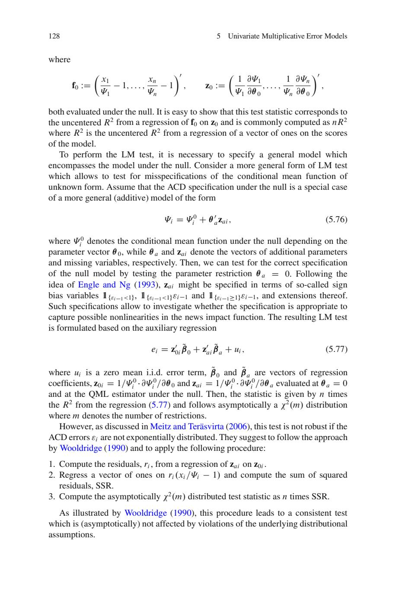</a><figcaption>PDF page 143 render</figcaption></figure>
<h3 id="pdf-page-144-printed-page-129">PDF page 144 / printed page 129<a class="heading-anchor" href="#pdf-page-144-printed-page-129" aria-label="この見出しへのリンク">#</a></h3>
<pre><code>5.6 Testing the ACD Model                                                                                         129


   More specific LM tests against particular parametric alternatives are derived by
Meitz and Teräsvirta (2006). In particular, they consider two types of misspecifica-
tion: the conditional duration is either additively or multiplicatively misspecified. In
these cases, it is given by

                                            xi D .i C &#x27;i /&quot;i                                                   (5.78)

or
                                              xi D i &#x27;i &quot;i ;                                                   (5.79)

where i D  . 1 / denotes the conditional mean depending on parameters  1
and &#x27;i D &#x27;i . 1 ;  2 / is the misspecification depending not only on  1 but also
on additional parameters  2 . Define

                                                        1 @i . 1 /
                                      ai . 1 / WD                   ;
                                                     i . 1 / @ 1
                                                      1 @&#x27;i . 1 ;  2 /
                                bi . 1 ;  2 / WD                       ;
                                                   i . 1 /    @ 2
                                                      xi
                                      ci . 1 / WD            1:
                                                   i . 1 /

Assume that under the null hypothesis H0 W  2 D  02 , the function &#x27;i satisfies
&#x27;i . 1 ;  02 / D 0, where the superscript ‘0’ denotes the true parameter. Then, as
shown by Meitz and Teräsvirta (2006), under the null H0 W  2 D  02 , the LM test
statistic for a test against a general additive alternative is given by

             ( n                   )8 n                         ! n           !1 n           !91
              X                  0
                                    &lt;X          0
                                                    X
                                                    n
                                                              0
                                                                  X         0
                                                                                  X         0
                                                                                               =
     LM D                cO i bO i      bO i bO i    bO i aO i     aO i aO i       aO i bO i
                                    :                                                          ;
                  i D1            i D1               i D1                i D1                        i D1
                                                                ( n                    )
                                                                 X
                                                                           cO i bO i
                                                                                               a
                                                                                            2d i m. 2 / :   (5.80)
                                                                    i D1


Likewise, assume that under the null hypothesis H0 W  2 D  02 , the function &#x27;i
satisfies &#x27;i . 1 ;  02 / D 1. Then, under the null H0 W  2 D  02 , a test against a general
multiplicative alternative is obtained by

       ( n                     )8 n                                  ! n             !1 n               !91
        X                    0
                                &lt; X              0
                                                     X
                                                     n
                                                                   0
                                                                       X         0
                                                                                         X             0
                                                                                                          =
LM D             &#x27;Oi cO i bO i      &#x27;Oi2 bO i bO i    &#x27;Oi bO i aO i     aO i aO i s       &#x27;Oi aO i bO i
                                :                                                                         ;
          i D1                 i D1                  i D1                   i D1                        i D1
                                                            ( n                     )
                                                             X
                                                                    &#x27;Oi cO i bO i
                                                                                           a
                                                                                           2d i m. 2 / :    (5.81)
                                                             i D1</code></pre>
<figure class="page-render"><a href="../assets/page_renders/page-144.jpeg">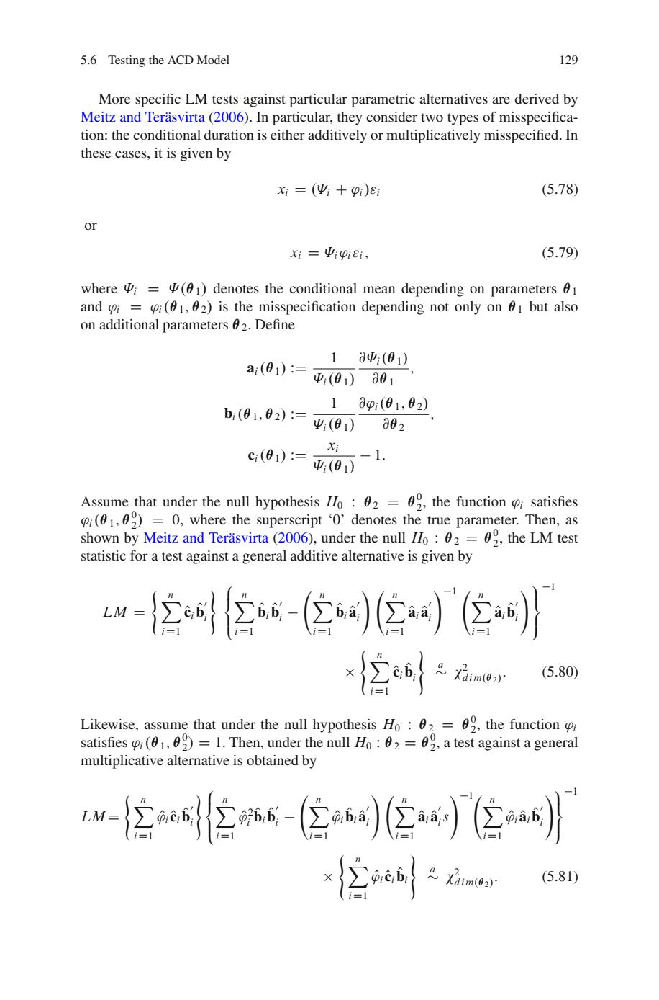</a><figcaption>PDF page 144 render</figcaption></figure>
<h3 id="pdf-page-145-printed-page-130">PDF page 145 / printed page 130<a class="heading-anchor" href="#pdf-page-145-printed-page-130" aria-label="この見出しへのリンク">#</a></h3>
<pre><code>130                                                     5 Univariate Multiplicative Error Models


   As stressed by Meitz and Teräsvirta (2006), misspecifications of the conditional
distribution of the durations may affect the properties of the LM test statistics as they
implicitly build on distributional assumptions. For instance, it is necessary that the
conditional variance of the durations is correctly specified under the null hypothesis.
To avoid distortions of the test statistics due to distributional misspecifications,
Meitz and Teräsvirta (2006) suggest a procedure building on Wooldridge (1991)
resulting in “robust” versions of the test statistics with their asymptotic behavior
being unaffected by possible distributional misspecifications. In case of additive
misspecification, it is suggested to compute the test statistic as follows:
1. Using the QML estimate of  1 under the null hypothesis and compute

        0          1 @i .O 1 /        0        1 @&#x27;i .O 1 ;  02 /                 xi
       aO i D                    ;   bO i D                           ;   cO i D               1;
                i .O 1 / @ 1               i .O 1 /                           i .O 1 /
                              0                             0
                                                         @ 2

   for i D 1 : : : ; n.
2. Regress bO i on aO i , i D 1; : : : ; n, and compute the corresponding d i m. 2 /  1
              0         0


   residual vectors rOi .
3. Regress 1 on cO i rOi , i D 1; : : : ; n, and compute the sum of squared residuals (SSR).
4. Compute the test statistic as nR2 D n  S SR which is asymptotically 2
   distributed with d i m. 2 / degrees of freedom under the null hypothesis.
   In case of the LM test against multiplicative misspecification, the same procedure
applies with bO i replaced by &#x27;Oi bO i . Applications of this framework to test against
specific types of misspecifications are illustrated in Meitz and Teräsvirta (2006).


5.6.5 Conditional Moment Tests

5.6.5.1 Adapting Newey’s Conditional Moment Test

The LM test discussed in the previous subsection has optimal power against local
(parametric) alternatives and is a special case of a conditional moment test. The main
idea behind the conditional moment (CM) test is to test the validity of conditional
moment restrictions implied by the data which hold when the model is correctly
specified. In the ACD framework, a natural moment condition is obtained by the
conditional mean restriction.
    Define i WD i ./, i D 1 : : : ; n, as the s  1 vector of conditional moment
functions with the property EŒi jwi  D 0, where wi is a s  q matrix of instruments.
Correspondingly, we obtain the q  1 vector of unconditional moment functions as
                       0
 i WD  i ./
            PnWD wi i . Moreover, we define the q  1 vector of sample moments
         1
&#x27;n WD n        i D1  i . In the ACD framework, natural choices for i are .xi  i / or
.xi =i  1/ allowing to test the null hypotheses for s D 1,

            H0 W     EŒxi  i jwi  D 0      or H0 W        EŒxi =i  1jwi  D 0:</code></pre>
<figure class="page-render"><a href="../assets/page_renders/page-145.jpeg">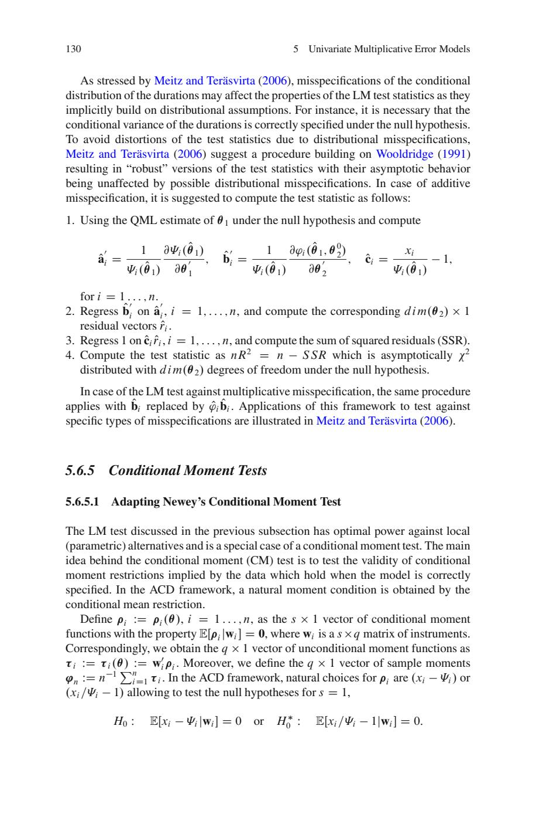</a><figcaption>PDF page 145 render</figcaption></figure>
<h3 id="pdf-page-146-printed-page-131">PDF page 146 / printed page 131<a class="heading-anchor" href="#pdf-page-146-printed-page-131" aria-label="この見出しへのリンク">#</a></h3>
<pre><code>5.6 Testing the ACD Model                                                                         131


We assume that  is estimated by exponential QML. Correspondingly, we denote
the p  1 vector si WD si ./ as the score associated with the i th log likelihood
contribution. Accordingly, we define the n  p matrix s WD s./ WD .s01 ; : : : ; s0n /
               ln L./
and H./ WD @ @@  0  as the Hessian of the pseudo log likelihood. Furthermore, we
make the following assumptions:
(A1)  i . 0 / follows a stationary and ergodic process with  0 defining the true
     parameter.
(A2)  i is continuously differentiable in  with EΠi ./ &lt; 1.
           p                    P            p   
(A3) &#x27;n ! EΠi  and n1 niD1 @ i =@ 0 ! E @ i . 0 /=@ 0 .
            1 Pn            
         =    n                d
(A4) n1 2 1 PinD1 i ! N .0; ˙ / with ˙ denoting a positive semi-definite
              n      i D1 s i
     covariance matrix of dimension p C q.
(A5) For some neighborhood N of  0 : EΠsup jjH./jj &lt; 1.
                                                      2N

    In the following, a modified form of Newey’s (1985) conditional moment test
is illustrated which allows for non-i.i.d. data and is robust to any misspecification
other than violations of the conditional mean restriction, as, e.g., distributional
misspecification or conditional heteroscedasticity in the scores. The asymptotic
distribution of n1=2 &#x27;O n is derived by expanding &#x27;O n around  0 using the mean value
theorem,
                    &quot;                                                 !          #
                            Xn                        Xn
    n &#x27;O n D n
      1=2       1=2
                      n 1
                                 i . 0 / C plim n1                    O
                                                          @ i . /=@ .   0 / ;
                                                   n!1
                              i D1                             i D1
                                                                                                (5.82)

where   WD  0 C .O   0 /, 0    1. With O being a QML estimator, we have

                                                    1 1=2 X
                                                            n
                                       
                   n1=2 .O   0 / D  n1 H.  /   n       si . 0 /:
                                                                         i D1

Substituting back into (5.82) yields
                                                                                            !
                                     X
                                     n                                X
                                                                      n
                          1=2                                  1                  
            n1=2
                   &#x27;O n D n                  i . 0 /  plim n              @ i . /=@
                                                        n!1
                                     i D1                             i D1

                                                                        X
                                                                        n
                                                                 1
                                                   n  1=2
                                                             H. /             si . 0 /:
                                                                        i D1

This expression can be re-written as
                                                 1=2 Pn              
                              n1=2 &#x27;O n D B
                                                 n
                                                       Pi D1  i . 0 / ;                       (5.83)
                                                 n1=2 niD1 si . 0 /</code></pre>
<figure class="page-render"><a href="../assets/page_renders/page-146.jpeg">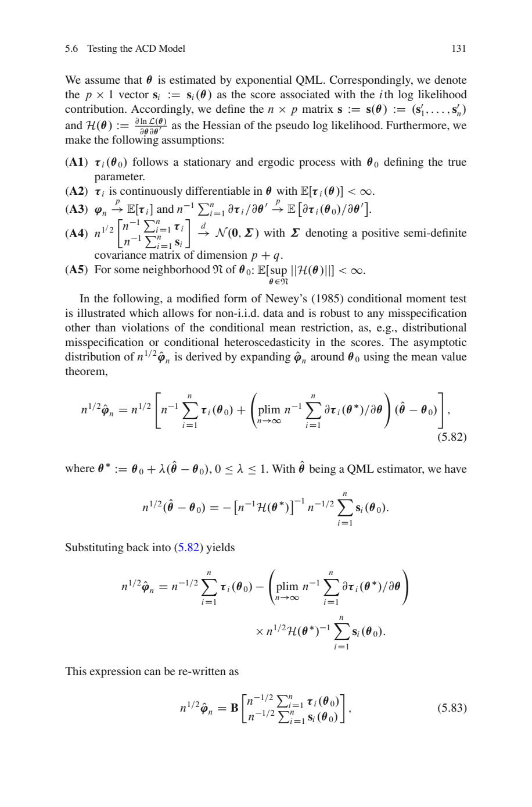</a><figcaption>PDF page 146 render</figcaption></figure>
<h3 id="pdf-page-147-printed-page-132">PDF page 147 / printed page 132<a class="heading-anchor" href="#pdf-page-147-printed-page-132" aria-label="この見出しへのリンク">#</a></h3>
<pre><code>132                                                                  5 Univariate Multiplicative Error Models


where the q  .p C q/ matrix B is given by
              &quot;                                                            !                      #
                          ::                     X
                                                 n
                                                                                             1
                                            1                                1      
        B D Iq             :      plim n                @ i . /=@           n H. /                ;   (5.84)
                                  n!1
                                                 i D1

                                                                                                  d
and Iq denotes a .q  q/ identity matrix. Then, we yield n1=2 &#x27;O n ! N .0; B˙ B0 /
and thus

                                       nŒ&#x27;O 0n .B˙ B0 /1 &#x27;O n   2q :
                                                                       a
                                                                                                          (5.85)
                                                 P                      P
Under the given assumptions, we have ˙ WD nj Dn j D 0 C nj D1 .j C j0 /,
where j WD EŒi . 0 /i j . 0 /0  and i WD .xi ;  0 / D . i . 0 /; si . 0 //0 is the
.qCp/1 vector of moment restrictions and scores in i . Then, ˙ can be consistently
estimated by a kernel-based estimator

                                                       X
                                                       n1
                                        Ȯ D                   K.j=qn /Oj ;
                                                 j DnC1


where K./ is a kernel function and qn is a bandwidth depending on n. Natural
choices are Bartlett kernels, quadratic spectral kernels or Parzen kernels as, e.g.,
suggested by Newey and West (1987) and Andrews (1991).
   Estimating the matrix B requires consistently estimating H./ by the
empirical P
          Hessian which is ensured by the dominance condition (A5). Moreover,
plim n1 i @ i .  /=@ can be consistently estimated by
n!1


                          X
                          n                             X
                                                        n
                  n1            @O i =@ D n1               .wi @O i =@ C O i @wi =@/ ;
                          i D1                          i D1

where
                                        (
                                            xi sOi =.xi  O i /          in case of H0 ;
                      @O i =@ D
                                            Osi O 2 =.xi  O i /
                                                   i                       in case of H0 :

                                                                          1 O   O0
                P of i.i.d. observations, ˙ is consistently estimated by n  i ; i ,
  Note that in case
whereas plim      i @./=@ can be consistently estimated by the outer product
          n!1
between score and moment vector (see Tauchen 1985, or Newey 1985). Then, we
get the well-known expression (see, e.g., Pagan and Vella 1989)
                      0
                  nŒO n .B˙ B0 /1 O n  D 0 R.R0 R  R0 s.s0 s/1 s0 R/1 R0 ;                       (5.86)

where  is a .n  1/ vector of ones and R is the n  q matrix with O 0i as i th element.</code></pre>
<figure class="page-render"><a href="../assets/page_renders/page-147.jpeg">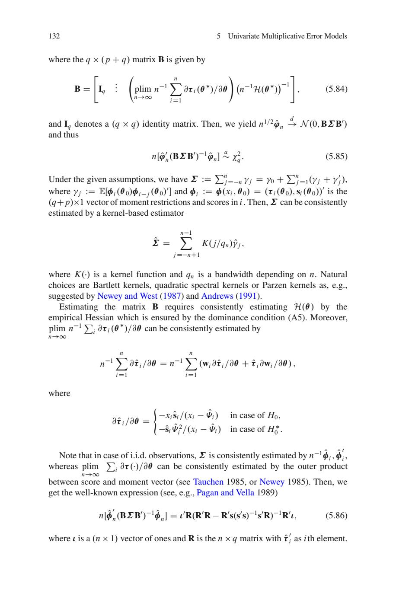</a><figcaption>PDF page 147 render</figcaption></figure>
<h3 id="pdf-page-148-printed-page-133">PDF page 148 / printed page 133<a class="heading-anchor" href="#pdf-page-148-printed-page-133" aria-label="この見出しへのリンク">#</a></h3>
<pre><code>5.6 Testing the ACD Model                                                               133


   Valuable choices for the weighting functions wj ./ are lagged sign bias variables
(as discussed in Sect. 5.6.4) and/or functionals (e.g. moments) of past durations.
   A well known result is that the power of the CM test depends heavily on the
choice of the weighting functions. Newey (1985) illustrates how to obtain an optimal
conditional moment test with maximal local power. It is shown that the LM test
corresponds to an optimal CM test in the case of a particular local alternative.
However, since the CM test is based on a finite number of conditional moment
restrictions, it cannot be consistent against all possible alternatives.
   Generalized moment tests are proposed by Chen and Hsieh (2010). They con-
struct moment functions which allow not only to test the validity of the conditional
mean function but also to test for independence and distributional misspecification.
Conditional mean and independence tests are constructed based on moment restric-
tions implied by the exponential QML method. Correspondingly, the distribution
test relies on the ML method and the assumption of independent error terms.


5.6.5.2 Integrated Conditional Moment Tests

Bierens (1990) illustrates that any CM test of functional form can be converted
into a chi-square test that possesses the property of consistency against all possible
alternatives. The main idea behind the consistent conditional moment test is based
on the following lemma:
Lemma 5.1 (Bierens 1990). Let % be a random variable satisfying the condition
Ej%j &lt; 1 and let z be a bounded random variable in R with PrŒE.%jz/ D 0 &lt; 1.
Then the set S D ft 2 R W EŒ% exp.tz/ D 0g is countable and thus has Lebesgue
measure zero.                                                               
   Bierens shows that EŒ% exp.tz/ ¤ 0 in a neighborhood of t D t0 where t0
is such that EŒ% exp.t0 z/ D 0 and Pr ŒEŒ% exp.tz/jz D 0 &lt; 1. de Jong (1996)
extends Bierens’ test towards the case of serially dependent data. In the following,
we assume that the duration process is stationary and obeys the concept of -
stability. Moreover it is supposed that Ej&quot;i  1j &lt; 1. By assuming that the model
is misspecified, i.e. PrŒEŒi . 0 /jFi 1  D 0 &lt; 1 and replacing the conditioning
information by .xi 1 /; .xi 2 /; : : :, where ./ is a bounded one-to-one mapping
from R into R, the set
                   8              2              0                  13     9
                   &lt;                               X d                     =
             S D t 2 Rd W E 4i . 0 / exp @            tj .xi j /A5 D 0
                   :                                                       ;
                                                     j D1


with d D min.i  1; c/ has Lebesgue measure zero. Therefore, de Jong (1996)
suggests a consistent CM test based on the unconditional moment restriction
                                                       0                       1
                                    X
                                    n                        X
                                                             d
                 MO n .t/ D n1=2          i . 0 / exp @          tj .xi j /A ;   (5.87)
                                    i D1                     j D1</code></pre>
<figure class="page-render"><a href="../assets/page_renders/page-148.jpeg">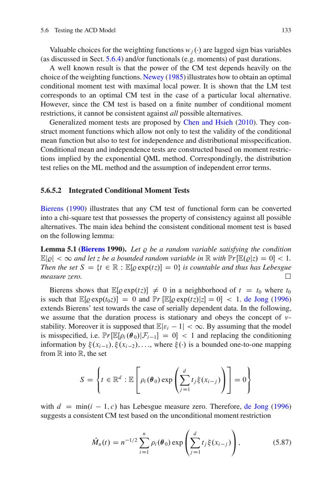</a><figcaption>PDF page 148 render</figcaption></figure>
<h3 id="pdf-page-149-printed-page-134">PDF page 149 / printed page 134<a class="heading-anchor" href="#pdf-page-149-printed-page-134" aria-label="この見出しへのリンク">#</a></h3>
<pre><code>134                                               5 Univariate Multiplicative Error Models


where  0 is estimated consistently by QML. de Jong points out that a conditional
moment restriction test based on d D c &lt; n does not allow us to consistently test the
hypotheses H0 and H1 for an infinite number of lags and thus d D i  1 should be
preferred. Equation (5.87) has the property that under the alternative hypothesis H1 ,
plim MO n .t/ ¤ 0 for all t except in a set with Lebesgue measure zero. Therefore, the
n!1
principle of the consistent conditional moment test is to employ a class of weighting
functions which are indexed by a continuous nuisance parameter (vector) t. Since
this nuisance parameter is integrated out, this test is called integrated conditional
moment (ICM) test. The lemma above implies that by choosing a vector t0 62 S , a
consistent CM test is obtained. However, S depends on the distribution of the data,
and thus it is impossible to choose a fixed vector t for which the test is consistent. As
suggested by de Jong (1996), a solution to this problem is to achieve test consistency
by maximizing a functional of MO n .t/ over a compact subset  of Rc . The main idea
is that a vector t0 which maximizes a test statistic based on MO n .t/ cannot belong to
the set S . By defining a space for infinite sequences ft1 ; t2 ; : : :g as

                        D ft W aj  tj  bj 8 j I tj 2 Rg;                        (5.88)

where aj &lt; bj and jaj j, jbj j  Bj 2 for some constant B, de Jong suggests to
consider the use of a functional of supt2 jMO n .t/j as test statistic. Consequently,
a difficulty arises by the fact that the limiting distribution of the test statistic
supt2 jMO n .t/j is case-dependent which prevents the use of generally applicable
critical values. For this reason de Jong introduces a simulation procedure based on
a conditional Monte Carlo approach. In particular, he shows that under the null, the
moment restriction (5.87) has the same asymptotic finite-dimensional distribution
as
                                                       0             1
                                     X
                                     n                   X
                                                         d
                   MOQ n .t/ D n1=2   i i . 0 / exp @   t.xi j /A          (5.89)
                                   i D1                j D1


pointwise in t, where i are bounded i.i.d. random variables independent of xi and
i . 0 / with EΠi2  D 1. Thus the distribution of MO n .t/ can be approximated based
on the simulation of n-tuples of i . de Jong proves that the critical regions obtained
by the simulation of MOQ n .t/ are asymptotically valid (see de Jong 1996, Theorem 5).
Nevertheless, a further difficulty is that a consistent ICM test rests on the statistic
supt2 jMO n .t/j. The calculation of this test statistic is quite cumbersome since it
requires the maximization over a parameter space of dimension n1. For this reason
de Jong suggests to find another continuous functional of MO n .t/ that possesses the
same consistency property but is more easily calculated. Then, de Jong proposes to
use the functional
                               Z
                      D n1      MO n .t/2 &#x27;1 .t1 /d&#x27;1 : : : &#x27;j .tj /dtj : : : ; (5.90)
                              </code></pre>
<figure class="page-render"><a href="../assets/page_renders/page-149.jpeg">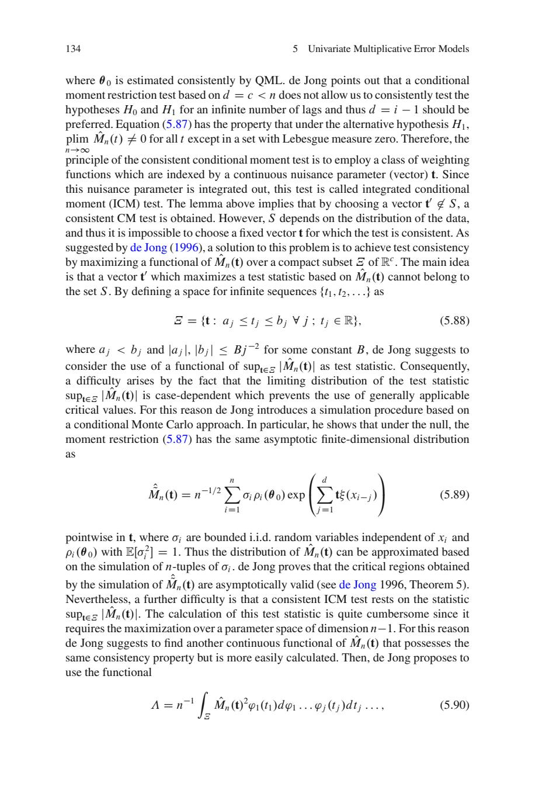</a><figcaption>PDF page 149 render</figcaption></figure>
<h3 id="pdf-page-150-printed-page-135">PDF page 150 / printed page 135<a class="heading-anchor" href="#pdf-page-150-printed-page-135" aria-label="この見出しへのリンク">#</a></h3>
<pre><code>5.6 Testing the ACD Model                                                                       135


where the integrations run over an infinite number of tj . According to (5.88), each tj
is integrated over the subset of R, such that aj  jtj j  bj . &#x27;j .t/ denote a sequence
of density functions that integrate to one over the particular subsets. de Jong shows
that the use of this functional leads to a consistent test. Since MO n .t/ can be written
as a double summation and the integrals can be calculated one at a time, we obtain
a functional which is easier to calculate than sup jMO n .t/j. By choosing a uniform
                                                             t2
distribution, i.e. &#x27;j .t/ D t1 , the ICM test statistic  results in

               X
               n X
                 n                              d 
                                                Y        1                          1
   D n1                  i . 0 /j . 0 /                  .xi s / C .xj s /
                                                      bj  aj
               i D1 j D1                        sD1
           
         exp.bj ..xi s / C .xj s ///  exp.aj ..xi s / C .xj s ///               :   (5.91)

   Summarizing, the implementation of ICM tests to ACD models requires the
following steps:
1. (Q)ML estimation of the ACD model: Estimate the particular ACD model by
   (Q)ML and calculate the conditional moment restriction i . 0 /.
2. Choice of aj and bj : Choose values for aj and bj , defining the parameter space
   . de Jong (1996) suggests to use aj D Aj 2 and bj D Bj 2 where the values
   A and B (0 &lt; A &lt; B) can be chosen arbitrarily. Asymptotically the choice of
   A and B should have no influence on the power of the test, however in finite
   samples it probably has. Monte Carlo simulations of de Jong (1996) suggest to
   choose a small range, for example A D 0 and B D 0:5.
3. Choice of ./: According to the lemma above, the function ./ must be a
   bounded one-to-one mapping from R into R. Asymptotically, the choice of the
   function ./ is irrelevant, however, Bierens (1990) proposes to use .x/ D
   arctan.x/. We suggest .x/ D arctan.0:01  x/  100 which is also a bounded
   function but has the advantage that it is nearly linear in the relevant region which
   improves the small sample properties of the test.
4. Choice of d : Note that in the case of dependent data, the test consistency is only
   ensured by accounting for all feasible lags, d D i  1, i.e., the dimension of the
   parameter space under consideration grows with the sample size. An alternative
   which does not require as much computer time, would be to choose a fixed value
   d &lt; n. However, in this case the test does not allow us to consistently test the
   moment condition for an infinite number of conditioning variables.
5. Simulation of n-tuples of i : Simulate R n-tuples of (bounded) i.i.d. random
   variables i;r ; i D 1; : : : ; n, with EΠi;r
                                              2
                                                  D 1 for r D 1; : : : ; R. Following
   de Jong (1996), we generate the i variables such that EΠi D 1 D EΠi D
   1 D 0:5.
6. Computation of the test statistic and simulating of the critical values:
   – Compute the test statistic  according to (5.91).
   – For each n-tuple of i , compute the simulated test statistic</code></pre>
<figure class="page-render"><a href="../assets/page_renders/page-150.jpeg">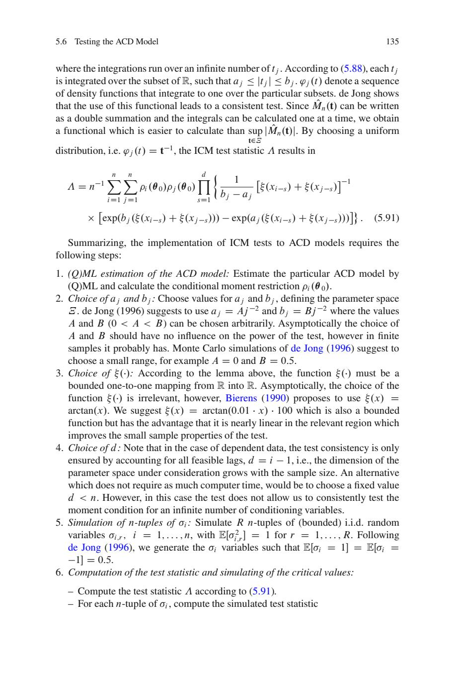</a><figcaption>PDF page 150 render</figcaption></figure>
<h3 id="pdf-page-151-printed-page-136">PDF page 151 / printed page 136<a class="heading-anchor" href="#pdf-page-151-printed-page-136" aria-label="この見出しへのリンク">#</a></h3>
<pre><code>136                                                           5 Univariate Multiplicative Error Models


                      X
                      n X
                        n
        Q m D n1                . i;r i . 0 //. j;r j . 0 //
                      i D1 j D1

                    d n
                    Y                                    1
                      .bj  aj /1 .xi s / C .xj s /
                    sD1
                 
                 exp.bj ..xi s / C .xj s ///  exp.aj ..xi s / C .xj s ///               ;

      for r D 1; : : : ; R.
7. Computation of simulated p-values: Since the critical region of the test has the
   form .C; 1, we compute the simulated p-value of the ICM test as

                                                     1 X
                                                          R
                                      pvICM D             1l Q     :                           (5.92)
                                                     R rD1 fr g


5.6.6 Monte Carlo Evidence

The following Monte Carlo study provides insights into the size and power
properties of various conditional moment tests. Samples of size 3,000 are drawn
which is still relatively small for high-frequency financial data and allows us to
study the finite-sample properties. Each Monte Carlo experiment is repeated 500
times. The following five data generating processes (DGPs) ensuring EŒi  D 1 are
considered:

         i D 0:1 C 0:1xi 1 C 0:8i 1                                                        (5.93)
         i D exp.0:137 C 0:3&quot;i 1 C 0:8 ln i 1 /                                            (5.94)
         i D .0:05i 1 C 0:5/&quot;i 1 C 0:8i 1                                                (5.95)
         i D exp.0:18 C 0:5&quot;i 1  0:48j&quot;i 1  1j C 0:8 ln i 1 /                           (5.96)
              8
              ˆ
              &lt;0:05 C 0:20xi 1 C 0:85i 1 if xi 1  0:25;
              ˆ
         i D 0:10 C 0:05xi 1 C 0:90i 1 if xi 1 2 .0:25; 1:5;                             (5.97)
              ˆ
              :̂0:20 C 0:03x C 0:80            if x  &gt; 1:5;
                                      i 1            i 1           i 1


where xi D i &quot;i , &quot;i  Exp.1/. Equation (5.94) is a logarithmic ACD (LACD)
specification as discussed in Sect. 5.5.
   Specifications (5.95) to (5.97) are nonlinear and extended ACD models which
are discussed in more detail in Chap. 6. In particular, specification (5.95) includes
innovations both multiplicatively and additively. Specification (5.96) implies a news
impact function which is kinked at &quot;i 1 D 1. Such a model has been proposed by</code></pre>
<figure class="page-render"><a href="../assets/page_renders/page-151.jpeg">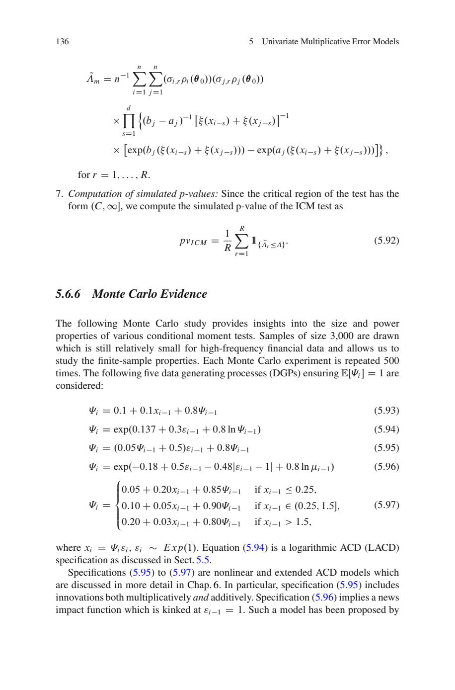</a><figcaption>PDF page 151 render</figcaption></figure>
<h3 id="pdf-page-152-printed-page-137">PDF page 152 / printed page 137<a class="heading-anchor" href="#pdf-page-152-printed-page-137" aria-label="この見出しへのリンク">#</a></h3>
<p><strong>Detected figure/table caption(s) on this page:</strong></p>
<ul>
<li>Table 5.1 Choice of weighting functions wi in the CM tests</li>
<li>test based on the conditional moment function i D xi  i (see Table 5.1).</li>
<li>Table 5.2 gives the rejection rates of the individual tests when a linear ACD(1,1)</li>
<li>specification is estimated. Correspondingly, Table 5.3 displays the results based on</li>
</ul>
<pre><code>5.6 Testing the ACD Model                                                                                 137


Table 5.1 Choice of weighting functions wi in the CM tests
                                       Conditioning information
                                                                          0
           zi;1 D 1l f&quot;i 1 &lt;1g ; 1l f&quot;i 1 &lt;1g &quot;i1 ; 1l f&quot;i 1 1g &quot;i1
                    0                                                             0
           zi;2 D zi;1 ; 1l f&quot;i 2 &lt;1g ; 1l f&quot;i 2 &lt;1g &quot;i2 ; 1l f&quot;i 2 1g &quot;i2
                                                                            0
           zi;3 D 1l fxi 1 &lt;1g ; 1l fxi 1 &lt;1g xi1 ; 1l fxi 1 1g xi1
                                                                                    0
           zi;4 D z0i;3 ; 1l fxi 2 &lt;1g ; 1l fxi 2 &lt;1g xi2 ; 1l fxi 2 1g xi2
                                                  CM tests
                                                                            0
CM1        wi;1 D xi1 ; xi1    2         3
                                      ; xi1    ; &quot;i1 ; &quot;2i1 ; &quot;3i1
                                                                                     0
CM2        wi;2 D w0i;1 ; xi2 ; xi2    2         3
                                              ; xi2   ; &quot;i2 ; &quot;2i2 ; &quot;3i2
                                     0
CM3        wi;3 D xi1 ; z0i;1
                                               0
CM4        wi;4 D xi1 ; xi2 ; z0i;2
                                0 0
CM5        wi;5 D &quot;i1 ; zi;3
                                              0
CM6        wi;6 D &quot;i1 ; &quot;i2 ; z0i;4
                       0      0 0
CM7        wi;7 D zi;1 ; zi;3
                                   0
CM8        wi;8 D z0i;2 ; z0i;4
CM9        wi;9 D .xi1 ; xi2 ; : : : ; xi10 /0
CM10       wi;10 D .&quot;i1 ; &quot;i2 ; : : : ; &quot;i10 /0
CM11       bins for &quot;i1 and &quot;i2 :
           Œ0; 0:1/; Œ0:1; 0:2/; Œ0:2; 0:5/; Œ0:5; 0:8/; Œ0:8; 1/; Œ1:2; 1:5/; Œ1:5; 2/; Œ2; 3/; Œ3; 1/
CM12       bins for xi1 and xi2 :
           Œ0; 0:1/; Œ0:1; 0:2/; Œ0:2; 0:5/; Œ0:5; 0:8/; Œ0:8; 1/; Œ1:2; 1:5/; Œ1:5; 2/; Œ2; 3/; Œ3; 1/
                                                 ICM tests
ICM1       i D xi  i ,         w./ D 1,        A D 0,           B D 0:5,            K D 100      d D1
ICM2       i D xi  i ,         w./ D 1,        A D 0,           B D 0:5,            K D 100      d D2
ICM3       i D xi  i ,         w./ D 1,        A D 0,           B D 0:5,            K D 100      d D5
ICM4       i D xi  i ,         w./ D 1,        A D 0,           B D 0:5,            K D 100      d D 10


Dufour and Engle (2000) and allows large innovations &quot;i (“positive” surprises in
durations) to have a different impact on future durations than small innovations
(“negative” surprises). Since it is in line with Nelson’s EGARCH model, it is
referred to as an EXACD specification. Finally, (5.97) corresponds to a threshold
ACD (TACD) model as proposed by Zhang et al. (2001). For more details on these
specifications, see Chap. 6.
    For each data generating process (DGP), we estimate a (linear) ACD(1,1)
specification i D ! C ˛xi 1 C ˇi 1 or a LACD(1,1) specification ln i D
! C ˛&quot;i 1 C ˇ ln i 1 , respectively. We use the conditional moment function i D
xi =i  1 and 12 weighting functions wi;j ; j D 1; : : : ; 12, based on functions of
past realizations, innovations, and indicator variables indicating possible nonlinear
news impact effects. As benchmarks we compute different specifications of the ICM
test based on the conditional moment function i D xi  i (see Table 5.1).
    Table 5.2 gives the rejection rates of the individual tests when a linear ACD(1,1)
specification is estimated. Correspondingly, Table 5.3 displays the results based on
estimations of the LACD(1,1) model. The first column shows the size since the
estimated model and the DGP coincide. The CM tests tend to be slightly oversized</code></pre>
<figure class="page-render"><a href="../assets/page_renders/page-152.jpeg">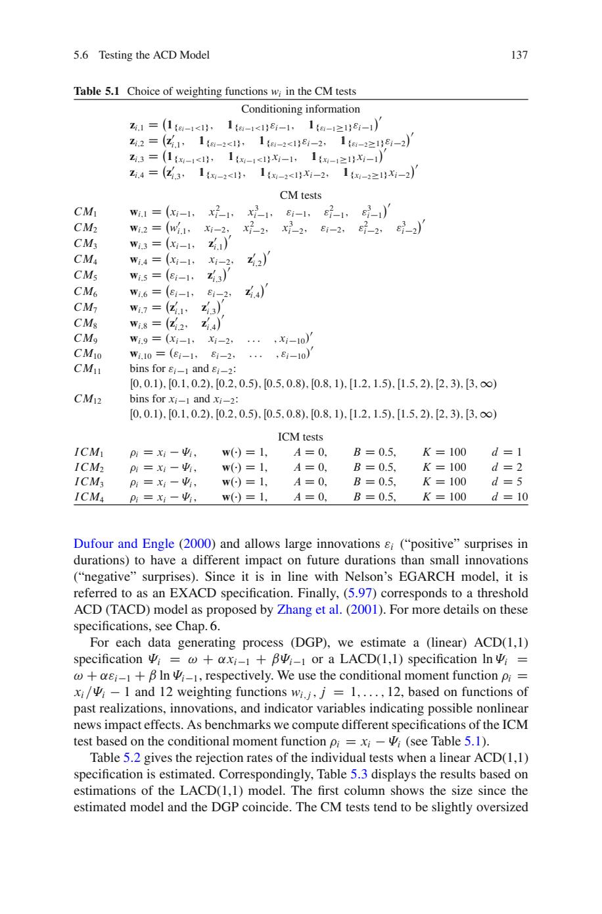</a><figcaption>PDF page 152 render</figcaption></figure>
<h3 id="pdf-page-153-printed-page-138">PDF page 153 / printed page 138<a class="heading-anchor" href="#pdf-page-153-printed-page-138" aria-label="この見出しへのリンク">#</a></h3>
<p><strong>Detected figure/table caption(s) on this page:</strong></p>
<ul>
<li>Table 5.2 Rejection frequencies of the individual (I)CM tests (see Table 5.1). Size of simulated</li>
<li>Table 5.3 Rejection frequencies of the individual (I)CM tests (see Table 5.1). Size of simulated</li>
</ul>
<pre><code>138                                                   5 Univariate Multiplicative Error Models


Table 5.2 Rejection frequencies of the individual (I)CM tests (see Table 5.1). Size of simulated
samples: 3,000. Number of replications: 500. Estimated model: ACD(1,1)
         DGP (5.93)        DGP (5.94)        DGP (5.95)        DGP (5.96)        DGP (5.97)

         5%       10%      5%       10%      5%       10%      5%       10%      5%       10%
CM1      0.066    0.126    1.000    1.000    0.498    0.605    1.000    1.000    0.140    0.212
CM2      0.076    0.142    0.994    1.000    0.526    0.670    1.000    1.000    0.132    0.210
CM3      0.074    0.146    1.000    1.000    0.454    0.591    1.000    1.000    0.156    0.250
CM4      0.070    0.148    1.000    1.000    0.443    0.584    1.000    1.000    0.162    0.246
CM5      0.068    0.138    1.000    1.000    0.464    0.581    1.000    1.000    0.168    0.254
CM6      0.064    0.136    1.000    1.000    0.436    0.584    1.000    1.000    0.162    0.266
CM7      0.074    0.116    1.000    1.000    0.485    0.591    1.000    1.000    0.182    0.282
CM8      0.076    0.130    1.000    1.000    0.447    0.567    1.000    1.000    0.186    0.284
CM9      0.072    0.120    0.998    1.000    0.488    0.601    1.000    1.000    0.168    0.274
CM10     0.068    0.122    0.996    1.000    0.440    0.564    1.000    1.000    0.188    0.286
CM11     0.064    0.104    1.000    1.000    0.519    0.615    1.000    1.000    0.210    0.314
CM12     0.066    0.126    1.000    1.000    0.450    0.574    1.000    1.000    0.222    0.338
ICM1     0.010    0.022    0.840    0.872    0.175    0.251    0.930    0.952    0.014    0.034
ICM2     0.008    0.020    0.822    0.860    0.203    0.275    0.918    0.940    0.014    0.034
ICM3     0.010    0.022    0.824    0.860    0.199    0.306    0.908    0.930    0.012    0.030
ICM4     0.006    0.022    0.818    0.852    0.199    0.316    0.912    0.934    0.016    0.030

Table 5.3 Rejection frequencies of the individual (I)CM tests (see Table 5.1). Size of simulated
samples: 3,000. Number of replications: 500. Estimated model: LACD(1,1)
         DGP (5.94)        DGP (5.93)        DGP (5.95)        DGP (5.96)        DGP (5.97)

         5%       10%      5%       10%      5%       10%      5%       10%      5%       10%
CM1      0.096    0.140    0.224    0.346    0.743    0.843    0.860    0.918    0.062    0.113
CM2      0.082    0.148    0.250    0.374    0.701    0.808    0.838    0.896    0.063    0.113
CM3      0.100    0.156    0.306    0.458    0.910    0.948    0.942    0.964    0.058    0.122
CM4      0.090    0.150    0.324    0.470    0.887    0.941    0.872    0.916    0.058    0.132
CM5      0.060    0.130    0.342    0.496    0.893    0.946    0.960    0.976    0.072    0.135
CM6      0.062    0.128    0.326    0.492    0.843    0.908    0.936    0.964    0.070    0.147
CM7      0.078    0.132    0.438    0.590    0.960    0.979    0.994    0.994    0.077    0.130
CM8      0.074    0.134    0.422    0.558    0.935    0.964    0.968    0.982    0.080    0.142
CM9      0.072    0.126    0.320    0.464    0.935    0.962    0.874    0.918    0.067    0.127
CM10     0.068    0.124    0.312    0.446    0.881    0.946    0.866    0.914    0.067    0.132
CM11     0.080    0.146    0.410    0.564    0.969    0.981    0.912    0.948    0.070    0.137
CM12     0.084    0.134    0.412    0.528    0.950    0.977    0.856    0.910    0.077    0.140
ICM1     0.026    0.074    0.066    0.134    0.065    0.128    0.042    0.098    0.008    0.028
ICM2     0.030    0.064    0.074    0.166    0.044    0.088    0.046    0.096    0.003    0.023
ICM3     0.034    0.066    0.074    0.166    0.048    0.094    0.042    0.102    0.005    0.015
ICM4     0.038    0.084    0.078    0.172    0.046    0.109    0.044    0.110    0.003    0.022


for the given sample size whereas the ICM test is strongly undersized. The power
of the CM tests is generally quite high and increases with the strength of the
deviation from linearity in i . Consequently, the tests have very high power to</code></pre>
<figure class="page-render"><a href="../assets/page_renders/page-153.jpeg">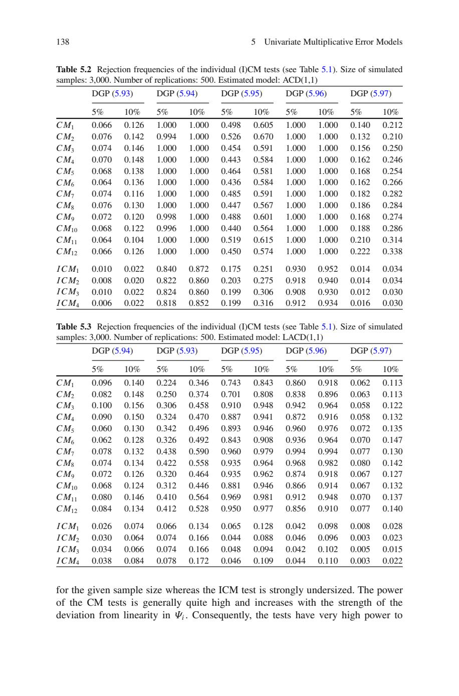</a><figcaption>PDF page 153 render</figcaption></figure>
<h3 id="pdf-page-154-printed-page-139">PDF page 154 / printed page 139<a class="heading-anchor" href="#pdf-page-154-printed-page-139" aria-label="この見出しへのリンク">#</a></h3>
<p><strong>Detected figure/table caption(s) on this page:</strong></p>
<ul>
<li>is revealed by Table 5.3. Nevertheless, the test’s power against an underlying linear</li>
</ul>
<pre><code>References                                                                                  139


evaluate the linear ACD model against the DGPs (5.94) or (5.96). Lower rejection
rates are shown for tests against additive stochastic components (DGP (5.95)) and
regime switching behavior (DGP (5.97)). Both forms of misspecification are hard
to detect since the deviation from a linear ACD is not too severe. A similar picture
is revealed by Table 5.3. Nevertheless, the test’s power against an underlying linear
ACD specification when a LACD is estimated is clearly lower than in the reversed
case. Not surprisingly, the tests have lower power to distinguish between an LACD
and an alternative specification implying also a concave news impact function. The
highest power is shown for conditional moment tests based on weighting functions
which are particularly sensitive against nonlinearities in the news response function
(e.g., CM11 and CM12 ). These specifications have power against a wide range of
possible misspecifications. This is still true even when we take into account that the
tests tend to be oversized. In contrast, the power properties of the ICM tests are very
poor regardless the choice of the underlying nuisance parameters. This is a general
finding for omnibus tests and is also confirmed by Meitz and Teräsvirta (2006) using
Hong and Lee’s (2003) spectral density test illustrated above.
    In conclusion, the results indicate that an appropriate choice of the weighting
functions induces consistency against a wide range of misspecifications while pre-
serving reasonable (size-adjusted) power properties in finite samples. Consequently,
in real applications, CM tests are valuable complements to LM type tests. Both kind
of tests serve as constructive tests in the sense of Godfrey (1996) allowing to detect
possible sources of model misspecification. Moreover, the proposed framework is
straightforwardly applied to test also multivariate MEM processes or restrictions on
higher order moments.


References

Aı̈t-Sahalia Y (1996) Testing continuous-time models of the spot interest rate. Rev Financ Stud
    9:385–426
Allen D, Chan F, McAleer M, Peiris S (2008) Finite sample properties of the QMLE for the Log-
    ACD model: application to Australian stocks. J Econom 147:163–185
Andersen TG, Bollerslev T (1998b) Deutsche mark-dollar volatility: intraday activity patterns,
    macroeconomic announcements, and longer run dependencies. J Finance 53:219–265
Andrews D (1991) Heteroscedasticity and autocorrelation consistent covariance matrix estimation.
    Econometrica 59:817–858
Bauwens L, Giot P, Grammig J, Veredas D (2004) A comparison of financial duration models via
    density forecasts. Int J Forecast 20:589–609
Bauwens L, Galli F, Giot P (2008) The moments of Log-ACD models. Quant Qual Anal Soc Sci
    2:1–28
Bauwens L, Giot P (2000) The logarithmic ACD model: an application to the bid/ask quote process
    of two NYSE stocks. Annales d’Economie et de Statistique 60:117–149
Bierens HJ (1982) Consistent model specification tests. J Econom 20:105–134
Bierens HJ (1990) A consistent conditional moment test of functional form. Econometrica
    58:1443–1458
Bollerslev T (1986) Generalized autoregressive conditional heteroskedasticity. J Econom 31:307–
    327</code></pre>
<figure class="page-render"><a href="../assets/page_renders/page-154.jpeg">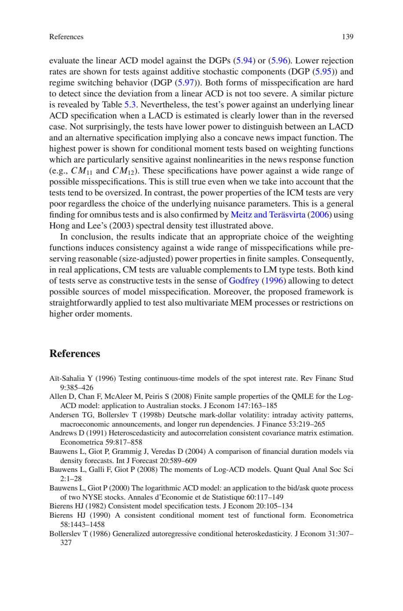</a><figcaption>PDF page 154 render</figcaption></figure>
<h3 id="pdf-page-155-printed-page-140">PDF page 155 / printed page 140<a class="heading-anchor" href="#pdf-page-155-printed-page-140" aria-label="この見出しへのリンク">#</a></h3>
<pre><code>140                                                    5 Univariate Multiplicative Error Models


Bollerslev T, Wooldridge J (1992) Quasi-maximum likelihood estimation and inference in dynamic
    models with time varying covariances. Econom Rev 11:143–172
Box GEP, Pierce DA (1970) Distribution of residual autocorrelations in the autoregressive-
    integrated moving average time series models. J Am Stat Assoc 65:1509–1526
Breusch TS (1978) Testing for autocorrelation in dynamic linear models. Aust Econ Pap 17:334–
    355
Breusch TS, Pagan RA (1979) A simple test for heteroskedasticity and random coefficient
    variation. Econometrica 47:203–207
Brock W, Dechert WD, Scheinkman J, LeBaron B (1996) A test for independence based on the
    correlation dimension. Econom Rev 15:197–235
Brownlees C, Cipollini F, Gallo GM (2011) Journal of Financial Econometrics 9:489–518
Brownlees C, Gallo GM (2011) International Journal of Forecasting 27:365–378
Chen X (2000) A beta kernel estimation for the density functions. Comput Stat Data Anal
    31:131–145
Chen Y-T, Hsieh C-S (2010) Generalized moment tests for autoregressive conditional duration
    models. J Financ Econom 8:345–391
de Boor C (1978) A practical guide to splines. Springer Verlag, Berlin, Heidelberg
de Jong RM (1996) The Bierens test under data dependence. J Econom 72:1–32
De Luca G, Gallo G (2009) Time-varying mixing weights in mixture autoregressive conditional
    duration models. Econom Rev 28:101–120
Diebold FX, Gunther TA, Tay AS (1998) Evaluating density forecasts, with applications to
    financial risk management. Int Econ Rev 39:863–883
Drost FC, Werker BJM (2004) Semiparametric duration models. J Bus Econ Stat 22:40–50
Duchesne P, Pacurar M (2008) Evaluating financial time series models for irregularly spaced data:
    a spectral density approach. Comput Oper Res 35:130–155
Dufour A, Engle RF (2000) The ACD model: predictability of the time between consecutive trades.
    Working Paper, ISMA Centre, University of Reading
Dufour JM, Roy R (1985) Some robust exact results on sample autocorrelations and tests of
    randomnes. J Econom 29:257–273
Dufour JM, Roy R (1986) Generalized Portmanteau statistics and tests of randomness. Commun
    Stat Theory Methods 15:2953–2972
Engle RF (2000) The econometrics of ultra-high-frequency data. Econometrica 68(1):1–22
Engle RF (2002b) New frontiers for ARCH models. J Appl Econom 17:425–446
Engle RF (1982) Autoregressive conditional heteroscedasticity with estimates of the variance of
    United Kingdom inflation. Econometrica 50:987–1006
Engle RF (1984) Wald, likelihood ratio and lagrange multiplier tests in econometrics. In: Griliches
    Z, Intriligator MD (eds) Handbook of econometrics, vol. II, chap. 13. Elsevier Science,
    pp. 775–826
Engle RF (1996) The Econometrics of ultra-high frequency data. Discussion Paper 96-15,
    University of California San Diego
Engle RF, Gallo GM (2006) A multiple indicators model for volatility using intra-daily data. J
    Econom 131:3–27
Engle RF, Ng VK (1993) Measuring and testing the impact of news on volatility. J Finance
    48:1749–1778
Engle RF, Russell JR (1997) Forecasting the frequency of changes in quoted foreign exchange
    prices with the autoregressive conditional duration model. J Empir Financ 4:187–212
Engle RF, Russell JR (1998) Autoregressive conditional duration: a new model for irregularly
    spaced transaction data. Econometrica 66:1127–1162
Fernandes M (2004) Bounds for the probability distribution function of the linear ACD process.
    Stat Probab Lett 68:169–176
Fernandes M, Grammig J (2005) Non-parametric specification tests for conditional duration
    models. J Econom 127:35–68
Gallant RA (1981) On the bias in flexible functional forms and an essential unbiased form: The
    Fourier flexible form. J Econom 15:211–245</code></pre>
<figure class="page-render"><a href="../assets/page_renders/page-155.jpeg">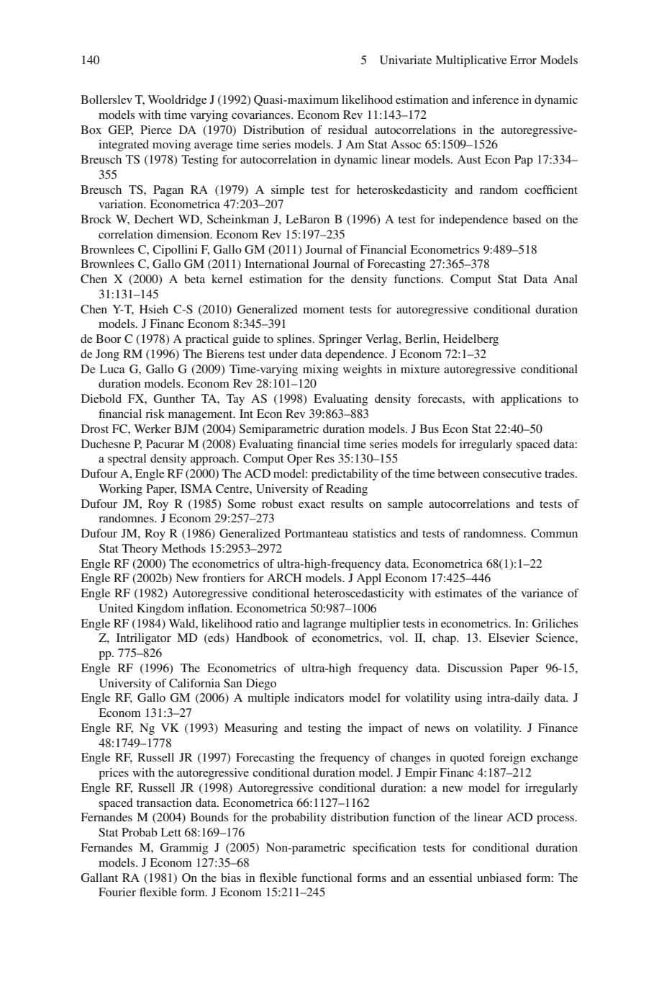</a><figcaption>PDF page 155 render</figcaption></figure>
<h3 id="pdf-page-156-printed-page-141">PDF page 156 / printed page 141<a class="heading-anchor" href="#pdf-page-156-printed-page-141" aria-label="この見出しへのリンク">#</a></h3>
<pre><code>References                                                                                    141


Gosh BK, Huang W-M (1991) The power and optimal kernel of the Bickel–Rosenblatt test for
   goodness-of-fit. Ann Stat 19:999–1009
Ghysels E, Gouriéroux C, Jasiak J (1998) Stochastic volatility duration models. Discussion paper,
   CIRANO
Godfrey LG (1978) Testing against general autoregressive and moving average error models when
   the regressors include lagged dependent variables. Econometrica 46:1293–1302
Godfrey LG (1996) Misspecification tests and their use in econometrics. J Stat Plan Inference
   49:241–260
Gouriéroux C, Monfort A, Trognon A (1984) Pseudo maximum likehood methods: theory.
   Econometrica 52:681–700
Grammig J, Maurer K-O (2000) Non-monotonic hazard functions and the autoregressive condi-
   tional duration model. Econom J 3:16–38
Hagmann M, Scaillet O (2007) Local multiplicative bias correction for asymmetric kernel density
   estimators. J Econom 141:213–249
Hamilton JD, Jorda O (2002) A model of the federal funds rate target. J Polit Econ 110:1135
Hautsch N (2003) Assessing the risk of liquidity suppliers on the basis of excess demand
   intensities. J Financ Econom 1:189–215
Hautsch N, Malec P, Schienle M (2010) Capturing the zero: a new class of zero-augmented distri-
   butions and multiplicative error processes. Discussion Paper 2010-055, Humboldt-Universität
   zu Berlin
Hendry DF (1995) Dynamic econometrics. Oxford University Press, Oxford
Hjort NL, Glad IK (1995) Nonparametric density estimation with a parametric start. Ann Stat
   23:882–904
Hong Y (1996) Consistent testing for serial correlation of unknown form. Econometrica
   64:837–864
Hong Y (1999) Hypothesis testing in time series via the empirical characteristic function: a
   generalized spectral density approach. J Am Stat Assoc 84:1201–1220
Hong Y, Lee T-H (2003) Diagnostic checking for the adequacy of nonlinear time series models.
   Econom Theory 19:1065–1121
Hong Y, Lee Y-J (2011) Journal of Time Series Analysis 32:1–32
Kalbfleisch JD, Prentice RL (1980) The statistical analysis of failure time data. Wiley, New York
Karanasos M (2004) The statistical properties of long-memory ACD models. WSEAS Trans Bus
   Econ 2:169–175
Karanasos M (2008) The statistical properties of exponential ACD models. Quant Qual Anal Soc
   Sci 2:29–49
Kwan ACC, Sim A-B (1996a) On the finite-sample distribution of modified Portmanteau tests for
   randomness of a Gaussian time series. Biometrika 83:938–943
Kwan ACC, Sim A-B (1996b) Portmanteau tests of randomness and Jenkins’ variance-stabilizing
   transformation. Econ Lett 50:41–49
Kwan ACC, Sim A-B, Wu Y (2005) A comparative study of the finite-sample performance of some
   Portmanteau tests for randomness of a time series. Comput Stat Data Anal 48:391–413
Lancaster T (1997) The econometric analysis of transition data. Cambridge University Press
Lawrence AL, Lewis PA (1980) The exponential autoregressive-moving average EARMA(P,Q)
   model. J R Stat Soc Series B 42:150–161
Lee S, Hansen B (1994) Asymptotic theory for the GARCH(1 1) quasi-maximum likelihood
   estimator. Econom Theory 10:29–52
Li WK, Mak TK (1994) On the squared residual autorrelations in non-linear time series with
   conditional heteroscedasticity. J Time Series Anal 15:627–636
Li WK, Yu LH (2003) On the residual autocorrelation of the autoregressive conditional duration
   model. Econ Lett 79:169–175
Ljung GM, Box GEP (1978) On a measure of lack of fit in time series models. Biometrika 65:297–
   303
Luca GD, Zuccolotto P (2006) Regime-switching Pareto distributions for ACD models. Comput
   Stat Data Anal 51:2179–2191</code></pre>
<figure class="page-render"><a href="../assets/page_renders/page-156.jpeg">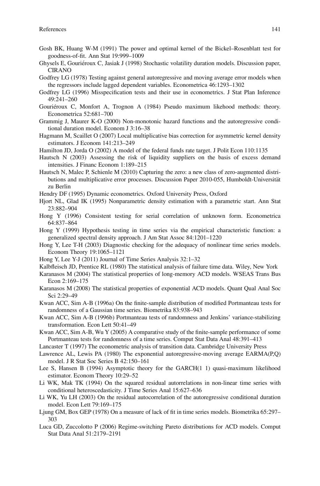</a><figcaption>PDF page 156 render</figcaption></figure>
<h3 id="pdf-page-157-printed-page-142">PDF page 157 / printed page 142<a class="heading-anchor" href="#pdf-page-157-printed-page-142" aria-label="この見出しへのリンク">#</a></h3>
<pre><code>142                                                    5 Univariate Multiplicative Error Models


Lunde A (2000) A generalized gamma autoregressive conditional duration model. Discussion
    paper, University of Aarhus
Manganelli S (2005) Duration, volume and volatility impact of trades. J Finan Markets 8:377–399
McLeod AI, Li WK (1983) Diagnostic checking arma time series models using squared residual
    autocorrelations. J Time Series Anal 4:269–273
Meitz M, Teräsvirta T (2006) Evaluating models of autoregressive conditional duration. J Bus Econ
    Stat 24:104–124
Nelson D (1991) Conditional heteroskedasticity in asset returns: a new approach. J Econom
    43:227–251
Newey WK (1985) Maximum likelihood specification testing and conditional moment tests.
    Econometrica 5:1047–1070
Newey WK, West KD (1987) A simple, positive semidefinite, heteroskedasticity and autocorrela-
    tion consistent covariance matrix. Econometrica 55:703–708
Pacurar M (2008) Autoregressive conditional duration models in finance: a survey of the theoretical
    and empirical literature. J Econ Surveys 22:711–751
Pagan A, Vella F (1989) Diagnostic tests for models based on individual data: a survey. J Appl
    Econom 4:29–59
Rosenblatt M (1952) Remarks on a multivariate transformation. Ann Math Stat 23:470–472
Silverman BW (1986) Density estimation for statistics and data analysis. Chapman and Hall,
    London
Tauchen G (1985) Diagnostic testing and evaluation of maximum likelihood models. J Econom
    30:415–443
Taylor SJ (1982) Financial returns modelled by the product of two stochastic processes – a
    study of daily sugar prices. In: Anderson OD (ed) Time series analysis: theory and practice,
    North-Holland, Amsterdam
Veredas D, Rodriguez-Poo J, Espasa A (2008) Semiparametric estimation for financial durations.
    In: Bauwens WPL, Veredas D (eds) High frequency financial econometrics. Physica-Verlag,
    Heidelberg, pp 225–251
White H (1982) Maximum likelihood estimation of misspecified models. Econometrica 50(1):1–25
Wooldridge JM (1990) A unified approach to robust, regression-based specification tests. Econom
    Theory 6:17–43
Wooldridge JM (1991) Specification testing and quasi-maximum-likelihood estimation. J Econom
    48:29–55
Zhang MY, Russell JR, Tsay RS (2001) A nonlinear autoregressive conditional duration model
    with applications to financial transaction data. J Econom 104:179–207</code></pre>
<figure class="page-render"><a href="../assets/page_renders/page-157.jpeg">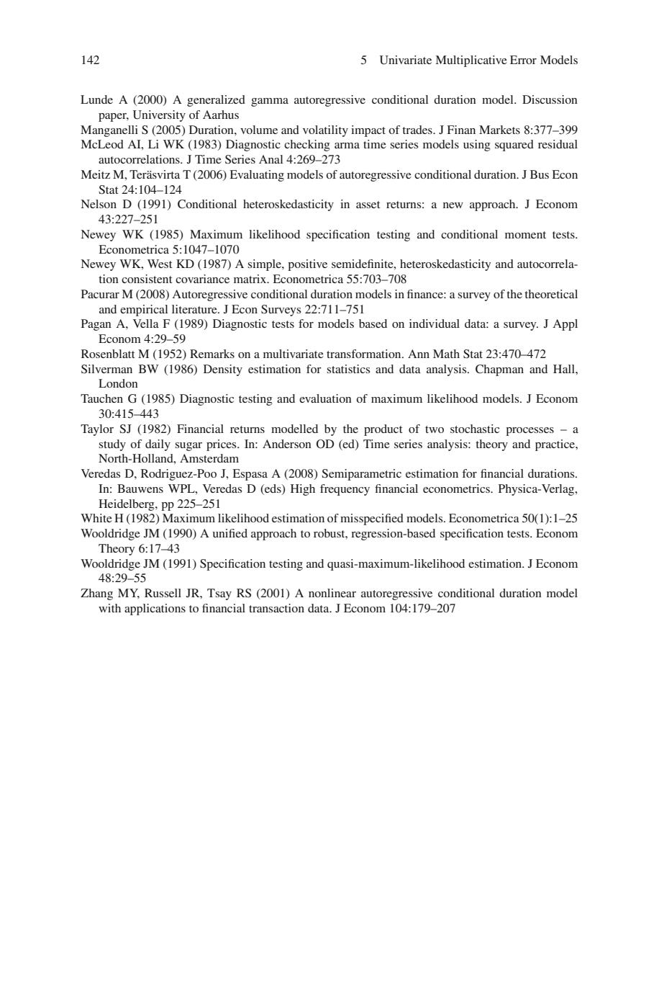</a><figcaption>PDF page 157 render</figcaption></figure></article><nav class="pager" aria-label="前後の章"><a href="ch04_financial_point_processes.html">← 第4章 金融点過程</a><a href="ch06_generalized_multiplicative_error_models.html">第6章 一般化乗法誤差モデル →</a></nav>
      </div>
    </main>
  </div>
  <script src="../app.js"></script>
</body>
</html>
